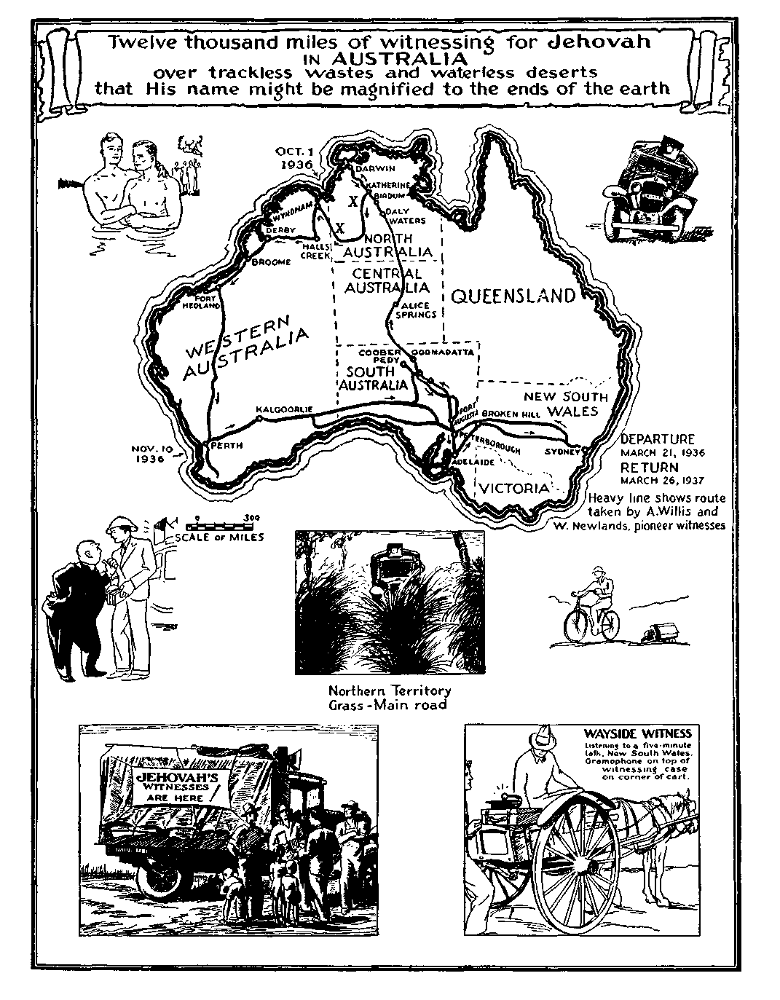
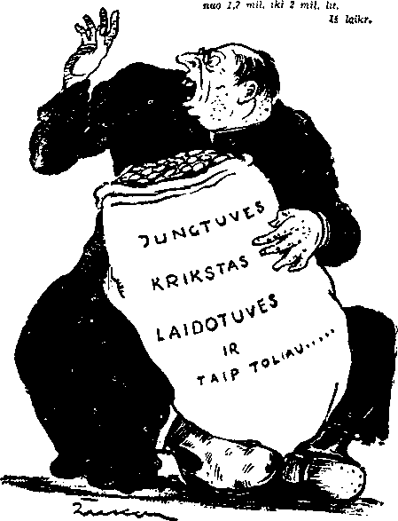

iiimiiiiiiiiiimiiiiiiiiiimiiiiiiiiiiiiiiiiiiiiiiiiiiiiiiiiiiiimiiiiiiiii
in this issue
(L)
IlllllllllllllllllllllllllllllllllllililllUlllllllllllllllllllllllllllllllllill
every other
WEDNESDAY
five cents a copy one dollar a year Canada & Foreign 1.25
Vol. XVIII-No. 468 August 25, 1937
•• CXq) • 1 " ■ — • •»
CONTENTS
LABOR AND ECONOMICS
What the War Did to Italy 749
Inflation or a Balanced Budget 757 Shuffling Off This Mortal Coil
Don't Be Hard on Salesmen 767
SOCIAL AND EDUCATIONAL
Twelve Thousand Miles of
FINANCE—COMMERCE—TRANSPORTATION
Quest for the Lost Stimson Plane 748
Profits of International Murderers 756 A Square Mile of the Sea
POLITICAL—DOMESTIC AND FOREIGN
Queer Distribution of
AGRICULTURE AND HUSBANDRY
Soil Erosion in the United States
SCIENCE AND INVENTION
Mechanical Cotton Picker a Success 759
Rivets May Go into the Discard 759
Bell Telephone Invented in Canada 759
A Hundred Different Kinds of Paper 759 The New Wool from Milk
HOME AND HEALTH
Frozen Cherries and Frozen Milk
RELIGION AND PHILOSOPHY
How Clergy Induce People
20 Days in Jail or 52 “Sermons”
Burning Facts About
Put One Over on Emperor Bao-Dai
The Love of Gain—Root of
• • • ■... •(sXj
Published every other Wednesday by
GOLDEN AGE PUBLISHING COMPANY, INC.
117 Adams Street, Brooklyn, N. Y., U.S.A.
Clayton J. Woodworth President Nathan H. Knorr Vice President
Charles E. Wagner Secretary and Treasurer
FIVE CENTS A COPY
$1 a year, United States ; $1.25 to Canada and all other countries.
Notice to Subscribers
Remittances : For your own safety, remit by postal or express money order. When coin or currency is lost in the ordinary mails, there is no redress. Remittances from countries other than those named below may be made to the Brooklyn office, but only by international postal money order.
Receipt of a new or renewal subscription will be acknowledged only when requested. Notice of expiration is sent with the journal one month before subscription expires. Please renew promptly to avoid loss of copies.
Send change of address direct to us rather than to the post office. Your request should reach us at least two weeks before the date of issue with which it is to take effect. Send your old as well as the new address. Copies will not be forwarded by the post office to your new address unless extra postage is provided by you.
I’rBLisnED also in Bohemian, Danish, Dutch, Finnish, French. German, Greek, Japanese, Norwegian, Polish, Spanish, Swedish.
Offices for Other Countries
British 34 Craven Terrace, London, W. 2, England
Canadian 40 Irwin Avenue, Toronto 5. Ontario. Canada
Australasian 7 Beresford Road. Strathfield, N. S. W., Australia
South African Boston House, Cape Town, South Africa
Entered as second-class matter at Brooklyn, N. Y.» under the Act of March 3, 1879.
•• o<G) •-------------------------------------——--—‘’ ©X® ••
Volume XVIII Brooklyn, N.Y., Wednesday, August 25, 1937 Number 468
Twelve Thousand Miles of Witnessing in Australia
By A. E. Willis, Pioneer
DURING the past year we (myself and another pioneer, W. Newlands) have been engaged in a trip through the center of this vast country, being privileged to be witnesses for Jehovah in these parts. Our object is to call on all sheep and cattle stations in South Australia and as many as possible in the Northern Territory.
Australia is a continent nearly 3,000 miles across from east to west and over 2,000 miles from north to south. The climate therefore varies from the cold and temperate of the south to the tropics in the north. Australia has a very small population compared to its size.
It is almost completely circuited by an airmail service, which is not, as stated in G.A. No. 429, operated at the same rate as ordinary postal rates. Twopence for ordinary, and five-pence or threepence extra for air mail (Par Avion).
Most of South Australia, Northern Territory and Western Australia is taken up by sheep and cattle stations; also a large proportion of Queensland and New South Wales.
This is not the first trip that has been made by Jehovah’s witnesses in the interior and far north. Due to the vast distances to be covered and few people met it is necessarily very expensive to effectively give the witness. Nevertheless, The Golden Age says, “No road too rough or too long for His witnesses.” Stations are anything up to the longest stretch apart, which is in Northern Territory, and is 180 miles. Stations mostly are from 25 to 80 miles apart.
In 1930 two of Jehovah’s witnesses traveled up the coast of Western Australia witnessing to the coastal towns as far as Derby, which is about 1,600 miles north of Perth, returning inland.
In 1933 two other witnesses started out from Adelaide, South Australia, and went as far north as Alice Springs in Central Australia, a distance of over 1,000 miles. They had only a very light English car, which was not suitable for the trip in such country. The car broke down and had to be abandoned. One of these witnesses was handicapped by a wooden leg, but managed to do some witnessing by camel.
In the same year three other of Jehovah’s witnesses started out from Perth. The owner of the car (a Pontiac) came from Toowoomba, Queensland. He shipped his ear from Sydney to Perth. The other witness was a pioneer from Tasmania, the third being a pioneer at Perth who, incidentally, was myself.
We followed much the same route as in the trip of 1930 as far as Derby, but we went on from there to Wyndham (most northern town of Western Australia) and across the Northern Territory to Darwin, thence south to Daly Waters, and then across into Queensland, terminating at Sydney, New South Wales.
None of these trips occupied more than four months, nevertheless many thousands of pieces of literature concerning Jehovah’s kingdom were distributed.
Start of the Big Trip
On the 21st of March, 1936, we left Bethel, at Strathfield, New South Wales, and set out westward to journey for more than 1,000 miles before turning northward. This time a Chevrolet 30-hundredweight truck was used. More than half the load was composed of petrol (gasoline), 228 gallons, the balance being half a ton of literature concerning the Kingdom (30 cartons), an amplifier for transcribing Judge Rutherford’s radio lectures, 12-gallon drum of oil, provisions and spares, etc.
While a truck would not give as good a petrol mileage as a car, the difference in value would be much more than covered by reason of the
fact of being able to carry the quantity of petrol above mentioned, the price of petrol inland increasing as much as 300 percent in some places, 39/- per case at Tennanto Creek, Northern Territory. Also, the freight on literature, which would be sent to us otherwise, would be saved, greatly reducing cost of provisions and oil, etc.
We traveled westward across the state of New South Wales along a given route to Broken Hill on the border, working the main road, also certain towns.
Quite a number of the country friends were met en route and loaded us up with many good things. Still traveling westward, Peterborough was reached, in South Australia. From here the track led northward. One hundred miles, and Hawker was reached, this town being on the railway. From Adelaide the railway goes north to Alice Springs, in Central Australia, a thousand miles.
Here we left the railway line and traveled northeast. The trip now began in earnest. No more made roads, only bush tracks, which can he first-class down to just possible, to be traversed according to the nature of the country.
It had not rained at Hawker for many a month. Everywhere dry, arid, desert-like country. No herbage, not even trees or wood of any kind, only in the dry creek beds.
It was a hard job finding the one solitary stump we used with which to cook our tea. Many a farm is abandoned. Half the houses along the road were empty. Drought has wrought havoc. Machinery* lies rusting in the paddocks or halfcovered with drift sand.
About sixty miles from Hawker it rained over an inch one night. The result was that we saw no one for nearly a fortnight, during which time we traveled but twenty miles. In all there were eight creeks to cross, and a swamp, in these twenty miles. We waited four days for it to dry up, and the remainder of the time were either getting out of bogs or making roads of saplings and stones or digging away banks.
From here we traveled due north, touching stations about forty-odd miles apart. We were received very well. Fair number of books were placed, and amplifier was used often, mostly at night, as no one has time to stop and listen in the daytime. Surprising disinterest was shown as far as the amplifier was concerned; unlike the small towns where everyone in the town can hear it and comes out to see it. Meat we obtained in abundance, gratis. This is always the rule on sheep and cattle stations.
About 150 miles north we turned westward again. Here, at an abandoned homestead we sustained a broken back axle; but, having a spare, we soon replaced it, despite the advent of a sandstorm at the same time.
A hundred and fifty miles brought us to the railway again, at Fadina, a village of corrugated iron on a woodless plain. Great interest was here manifested in the amplifier.
A hundred and eighty miles northward along the railway line brought us to William Creek, which is merely a hotel and store. Here, however, was a Jonadab who had been awaiting us for many months. He became interested as a result of a former trip in 1933. We stayed here a week, having a general overhaul. During this time this Jonadab friend and also another who works for him both symbolized their consecration to do the will of Jehovah, whatsoever that may be. The record entitled “Baptism” was run off and the symbol performed in a warm spring near by. After being loaded up with further eatables we departed northward again.
Every forty-odd miles along the railway line is a fettlers’ camp. At these places quite a number of books were placed, as many as nineteen books with a camp of two or three men; while, on the other hand, our work was quite unappreciated by some.
A further 200 miles and Oodnadatta was reached, a village of about twenty houses, police station, store and post office. A few books were placed here.
Now our road went away from the line, northwestward, to strike it again at its terminus, Alice Springs, 400 miles northward.
The track now improved considerably, but was mostly a winding earth track through mulga scrub. The track was never straight for a hundred yards at a time. Winding left and right, left and right, all day, till one’s shoulders ached from turning the wheel. One day we nearly capsized, coming out of a bad gutter on a bad camber. Another day six out of eight bolts broke in a back wheel where the wheel is fixed to the hub. Our wheels are all steel, however, as wooden spokes would never stay together in this tropical country.
Sometimes long red sandhills to conquer, which means a flat out rush in second gear or low gear, if very heavy. Rounding these sandy curves, of necessity at speed, evidently broke the bolts in the wheel with the terrific side strain. Much sand was encountered in these last few hundred miles. Sometimes a white sandhill rises fifty or sixty feet from the plain. It is necessary to go around it, however far that may be. Then there are the red sandhills, which are not so bad, only heavy going. Some of the dry creekbeds are the worst: hundreds of yards of heavy fine sand. We found it necessary to have Oregon planks sent up to us, which we used in these sandy places and bogs of any description.
Eventually we reached Alice Springs. The last hundred and fifty miles being exceedingly rough, rocky passes through the hills being the roughest, sometimes it was necessary to follow a river bed for some distance in order to get through. We crossed the river Hugh thirteen times in twenty miles.
The rivers are all dry now, but come down sweeping all before them when it rains. Rainfall in central Australia is most irregular. It is just as likely to rain now as a year hence. The dry river beds are sometimes stony, but otherwise very sandy, making bad crossings. Some miles from Alice Springs we discovered a back spring hanger was broken, but it held together till we got there. None procurable in the town; so wired Adelaide, 1,000 miles away, and the part just caught the train then leaving and we received it four days later. If it had missed the train, we would have been held up till next train, a week later.
Alice Springs is a small town neatly laid out in blocks on a plain surrounded on three sides by rocky hills and on the fourth by the Tod river; just a day’s work to witness for two publishers.
The local Catholic priest behaved most violently, threatening to punch my comrade in arms on the proboscis. It seems he took exception to the lecture “Fathers” put over the amplifier the night before. He was told that he was what he is. He said that Hitler and Mussolini were the higher powers and that he had the power to give life to the people. He threatened to get the police, etc., if we put the amplifier on again. Next night “Separating the Nations” thundered forth its message of warning and hope to the township. Fifty bound books and seventy small pieces were placed in Alice Springs.
Then commenced the journey of 1,000 miles northward to Darwin, the capital and port of the Northern Territory of Australia. The first township was Tennants Creek, about 320 miles north of Alice Springs. This town owes its existence to its gold mines, which are scattered over an area of about thirty by forty miles.
Some seemed to think we would be handled rough (or something of that nature) here, according to reports along the road. True, they were a tough bunch, but about thirty bound books and many small pieces were distributed in two days, and several Golden Age subscriptions obtained. A young Fijian who was of French parentage identified himself as being greatly interested in the Watch Tower publications. The amplifier soon found him out.
We left the rocks of Tennants Creek with its yellow metal and struck north once again. A few stations were encountered at intervals of about fifty miles. These proved rather uninteresting. Four hundred miles from Darwin we came onto the air-mail route at Daly Waters, consisting of a store and telegraph station. Just arrived in time to see the Quantas mail plane land, which, incidentally, brought a letter of instructions from the office and which made our route from Darwin to be down the west coast of West Australia to Perth. This is a distance of about 3,500 miles.
The road generally from Alice Springs was good. Next we reached Berdum, which is the rail head from Darwin, 350 miles of railway. Next Matarauba. These were just little places of a dozen buildings or less. Some literature was left at each place, the amplifier also being appreciated. The road now was rather rough 84 miles via Marauboy (tin mines) to Katherine on the Katherine river. This is a town of a day’s work, and is kept in existence chiefly by numbers of peanut farmers round about who are mostly Chinese and Russian.
Katherine received Jehovah’s witnesses with open arms. The amplifier was greatly appreciated, nothing of such nature having ever been at Katherine before.
Then came the worst two hundred miles of road or track in Australia. From Katherine to Darwin the road crosses and recrosses the railway line. Many bad creeks have to be negotiated, often being very steep, rough and rock-strewn. A bad side slope caused the truck to slide holus-bolus against the lower bank in a cutting, busting up the water tank. Rough ridges of solid rock and black soil strewn with big gibbers (rocks anywhere up to the size of a man's head).
With witnessing the various stations and cottages of gangers, etc., along the railway line, it took us a week to do the trip up. The return trip was a straight run, but, nevertheless, took four days to accomplish.
We were in Darwin twelve days. Using our amplifier nightly we raised quite a stir. A local ally of the Philistines inserted a warning concerning our “pernicious literature” in the local church news and also the local paper. The Society’s auxiliary ketch “Lightbearer” witnessed at Darwin some fifteen months ago. However, some hundreds of pieces of literature were distributed. Along the railway just as much literature was placed as on the previous trip three years ago.
At Katherine the local baker identified himself as a person of good will and as a friend in need to us. From Katherine our track led us westward 210 miles, then south 100 miles, west again for 120 miles, then northwest 250 miles to Wyndham, in Western Australia.
Fifty-five miles from Katherine the clutch plate gave out, and we were fifteen days before we were able to move on. This country is very dry and we were warned to take plenty of water. Fortunately, therefore, we had a forty-gallon drum of water aboard. Jehovah’s witnesses in Australia always have a push bike (bicycle) or several, as part of their service equipment. We had one, and here was where it came in useful. Bill Newlands, my comrade in arms, got back to Katherine and wired to Darwin for the necessary part. But the track was sandy and he had to walk a great deal of it.
Here was where the baker, our friend at Katherine, helped us by putting Bill up for the fortnight, board and lodgings free. I kicked my heels at the track as best I could. It was a tedious fortnight. There was a water-hole near by, but it was dry. Later the mailman passing that way brought me some more water.
We hit the trail again for Wave Hill via Victoria River Downs (or Borril Estates), 250 miles. Wave Hill is a wireless station, police station and air-mail port. The road was blacksoil plains strewn with big gibbers. Thence to a cattle station, Inverway. Seventy miles between water here to those not familiar with the country. The cattlemen generally are very hospitable. Free board and lodgings are the rule. Sheep stations are not so gracious, although bread and meat are always free.
The track now led through desert country, red-gravelly country, gum trees, etc., but little or no water. Twenty-five miles from Inverway we suffered a second and more serious disaster. In a rock creek bed a stud stripped in the universal, which came to pieces and broke the end off the mainshaft of the gearbox. Inverway was the nearest station, but we did not know if it was on the air-mail route or not. The bike again came into use and one rode back to Inverway while the other remained with the truck as a safeguard against pilferers, and because that was the only thing to do.
We learned to our disappointment that Inverway was not on the air-mail route and the nearest port of call was Ord River, 105 miles to the north by road. The journey to Ord River took two days of alternate riding and walking over rough, stony ground and sometimes over a good track on black-soil plains. Fortunately, there was water every twenty or twenty-five miles. We still had a 44-gallon drum of water on the truck.
A letter was sent by air mail to the Society at Strathfield, Sydney, N.S.W., over 3,000 miles away, and in fourteen days a new universal and mainshaft arrived by air. There is a good airmail service completely encircling Australia twice a week. The parts were posted for the
plane previous, but it was all booked up, so we had to wait until the next one. Thus we were held up for twenty days in the wildest part of Northern Territory. This track is seldom used, and one might wait two months before a traveler came along. It involved 170 miles of walking and bike-riding in the tropical heat. However, we rejoice to have obstacles to overcome in order to show our appreciation of the goodness of our heavenly Father, who, we know, always holds us in the hollow of His hand.
Ord River station supplied free board and lodging for the fortnight while waiting for the parts, and a rock water-hole was located four miles from the truck; so, He that feeds the sparrows cares for His own.
October 1 saw us en route for Wyndham. Our mechanical troubles had not ended, however. In the four days to Wyndham we sustained the following: stripped speeds gear, broken king pin, back axle broken, and stripped bearing front wheel. We carried spares for these.
Naturally our resources were somewhat low; but our heavenly Father knows we have need of all these things. Then 4^ sets were placed in quick order; 3| on one day. A set comprises fifteen bound books, thirty booklets, two Golden Age, one Watchtower, a small Bible, and a year’s subscription for The Golden Age, in acknowledgment of a total contribution of----.
So at Wyndham we were able to procure petrol stores and spares.
The next hop was to Halls Creek, 250 miles; a similar rough, rock-strewn track through mountainous country. Three or four cattle stations were passed en route.
This is the driest season for many years in the Kimberleys of West Australia and Northern Territory. After a number of dry seasons the water situation becomes acute. Everywhere wells are being deepened and new bores being put down. Now we traveled due west across Kimberley, 450 miles to Derby, a small township on the coast. Thence 150 miles to Broome, also on the coast.
Broome is a cosmopolitan town of fair size for these parts. Half the population are Chinese, Japanese, Malay, Kopang, Manila, Greek, etc. Among these foreigners we had a royal time, placing 173 pieces of literature in one day, whereas the Europeans were the usual prototypes of “Christendom”. We put on the lecture “Fathers” one night. The priest rang up the police as usual, but the constable was evidently not under his control and was satisfied without much ado.
Another 450 miles south took us to Port Hed-land, via the ninety-mile beach. Here the amplifier caused a dividing of the people. One man, a Catholic, said that he admitted ours was a wonderful organization, and if he could get a few fellows to work for him as we work for the Watch Tower he would be able to sit back.
No doubt! But the remnant work for love, and not for profit. At Derby another said, “I heard you chaps in Tennants Creek the other night (1,500 miles away). Why, those books are all the way from here to Adelaide.” I assured him they were much farther than that.
Another 160 miles saw us at Bamboo Creek, among the spinifex-covered ranges where a small village of a dozen bough sheds exists. Here we placed thirty books and fifty booklets in two hours.
Drought conditions prevail here as elsewhere. Sheep stations living on tinned meat. The butcher shop in Marble Bar had to close down because no stock was available. At station Ethel Creek, West Australia, they had to travel forty miles from the homestead to find a killer (beast suitable to butcher). They couldn’t go near their stock, because the animals were so weak that they would fall over and die when frightened.
Eleven hundred and fifty miles from Port Hedland to Perth took us eleven days. Stations Were from 20 to 130 miles apart; so witnessing took up a minimum of time. Arrived at Perth on November 10.
After nearly eight months on the road we were certainly glad to reach civilization again. Here we spent a happy six weeks among the Perth friends, also taking a tour down the southwest farming districts, visiting the small companies and witnessing with them. We had little to count in the way of cash when we arrived at Perth. However, Jehovah’s witnesses depend on no human creatures, and their heavenly Father knows all their needs. Therefore on January 2, 1937, we left the bitumen roads of Perth for the last lap of over 4,000 miles for Sydney, loaded with four drums of gas and all necessary supplies, this latter being a token of the hearts of the Perth friends, who love the Lord’s work and His witnesses. Our party had now increased by the addition of a third member, a new pioneer seeing his privilege of serving the Most High.
The first call of note was Kalgoorlie, 375 miles inland. Here is a small company of zealous witnesses, and here we stopped a week-end. On the 8th of January we set off again along what is known as the “trans” railway line, since it is the link between Perth and Adelaide. Working the small railway villages of perhaps a dozen houses each, we had many happy moments with our sound machine. Nothing of this nature had ever before been in these parts. Two hundred miles from Kalgoorlie the road turns south for 90 miles to within a few miles of the coast; then eastward again and across the Great Australian Bight. The track here was excellent. A few sheep stations were called on, about 80 to 100 miles apart. A thousand miles from Perth we reached Eucla, on the border of South Australia, an abandoned wireless receiving station. A further 600 miles brought us to Port Augusta, situated at the head of Spencer Gulf. This portion is partly farming and partly sheep country.
On January 25 we left Port Augusta in one of its famous howling dust storms, following the “trans” line again back toward Perth for 230 miles. Then we left it and struck out north for the Ofal Fields of Coober Pedy, 160 miles.
Coober Pedy is a village of about sixty inhabitants. Not a dwelling or building is to be seen on approaching it, nor a stick of wood on the horizon. All the diggers live in dwellings cut into the hillside, like rabbits. One small hill looked like a rabbit warren, with holes all over it. Even the post office is located in one of these.
During the afternoon we placed 53 bound books and ninety-odd booklets and obtained two Golden Age subscriptions. All were invited to come around to the local store in the evening to hear “a musical program with some educational lectures”.
About 25 turned up and enjoyed a 1^-hour mixed program. After running “Fathers” and “Hypocrisy” one old digger became somewhat rattled and asked certain questions, which were answered over the microphone, to everyone’s entertainment and the aforesaid’s discomfiture. “Guess his church!”
We now returned on our tracks 120 miles. The road northward was under water, and therefore impassable. Then a remaining 100 miles to Coward Springs and our Jonadab brethren whom we visited last June, previously mentioned. Celebrations continued until early morning.
After leaving Coward Springs we had some real fun getting in and out of bogs, running creeks, etc. Finally we took to taking down fences and putting them up again, and thus avoiding the roadway. We got stuck in running creeks and in one place got right down to the differential in mud. We got out by levering up each wheel with a twelve-foot length of railway line and placing a plank beneath. Arrived at Adelaide on February 22. It was good to see familiar faces again. The next lap was to Broken Hill. Here, as on our way over, we spent a happy week. From here we did little witnessing, and in ten days covered the 700 miles to Sydney, arriving in time to celebrate the Memorial, on March 26,1937, one year and five days since we set off.
So ends another momentous trip, involving 12,250 miles of traveling. Only the highest praise should be given where it is due: to Jehovah, who blesses the efforts of His people to honor His name. Throughout our varied adventures, we always knew there would be a way of overcoming every obstacle.
Our Chevrolet truck, 1929 model, did splendidly. Its total mileage must be well over the 100,000 mark. The engine behaved excellently. Throughout the many miles and the hard work she was always to be relied on. Not once on the whole trip were we ever pulled out of bog, sand or creek. The engine always did it. Our troubles were transmission and wheel bearings only, and this is to be expected with a secondhand vehicle. Over 1,000 gallons of gas were used, and fifteen gallons of oil.
(Translation from Malay of an article which appeared in the Pewarta Deli [Deli Mews], Medan, Sumatra, June 22, 1936. Address by E. C. Ewins)
satan’s organization ABOUT TO BE COMPLETELY DESTROYED!
ESTERDAY evening, beginning at four o’clock, a meeting was held in the church of the Christian Batak Community, Paleisweg, at which Mr. E. C. Ewins, a representative of the Watch Tower Society, who only arrived in Belawan a few days ago by the sailing vessel “Lightbearer”, gave an address. It is estimated that about 100 persons were present, including also ladies. [Note: Actually about 200 present.] The address was given in English and translated into the Batak language by Mr. Sinaga, an elder of the church. It was followed with great interest by the audience, and the meeting ended at 5:30.
The meeting was opened with a song and a prayer, after which the time was given to Mr. Ewins for his address. Mr. Ewins said that before beginning his address he would let them hear a song of praise in English by means of gramophone records made by the Society and aided by a loud-speaker also made by the Society. After that a record in Dutch on the subject “Life” was also used, and this was followed by Mr. Ewins’ speech.
Mr. Ewins began his speech by saying that the Lord is Jehovah, who possesses all power, above the world and above all creation. When Lucifer rebelled many of the angels turned against God, and Adam also was induced to sin, together with Eve.
Since then two organizations have been in existence, one serving Satan and the other serving God.
RELIGION USED TO MAKE MONEY!
Various religious organizations claiming to teach the people and to turn them to God are actually leading them to destruction, and such organizations are working to profit themselves while claiming that they are serving God. Because of this a movement started in America by Mr. Rutherford for the instruction of the people so that they might return to God. The Watch Tower Society was formed in 1880, in America, and has various branches throughout the world. As has been said, this organization has suffered much persecution in many places, such as Japan, Germany, Canada, Austria, and in some parts of the U.S.A.
CHRISTIANITY SHOULD BE BASED ON THE BIBLE
Christianity, to be carried out perfectly, should be based on the Bible, but many preachers do not give true interpretations of the contents of the Bible, but merely quote and then give their own interpretations, so that the people are no longer guided by God’s Word, but by the words of men. This is done for the purpose of profiting themselves.
What constitutes Satan’s organization? It is comprised of the religious systems which are not operating in accordance with true Christianity. Worldly powers also form a part of this organization. The result of the operations of such is that the people are turned further away from God.
The Roman Catholic system is particularly responsible for turning the people away from God, and the Protestant systems are no better. All are operating for selfish purposes in using the name of God, with the ultimate result that all will be destroyed.
The greater the power of these organizations, the more Satan uses and overreaches them.
Present-day events prove, however, that Satan’s organization is soon to be destroyed, to be followed by the full establishment of God's kingdom.
From the foregoing statements you can judge whether the Watch Tower Society belongs to Satan or whether the above-mentioned organizations belong to Satan.
The Watch Tower Society is sending witnesses throughout the world to spread the Gospel. All questions, from the smallest to the greatest, are fully explained by the Watch Tower Society by means of books and booklets and also by radio. The Watch Tower Society has no churches, desiring only to tell the people about the kingdom of God, soon to be established.
Expressing the hope that the audience would appreciate the truth of what had been said, and thanking those present for their attention, Mr. Ewins closed his address with a prayer of thanksgiving.
TOUR OF THE EAST
At the close of his lecture we asked several questions of Mr. Ewins through one of his
friends. Mr. Ewins informs us that the Watch Tower Society was founded in 1880, in America. The president is Judge J. F. Rutherford, a famous writer and a good speaker who has given many discourses on the Bible by means of the radio. The organization is established in London under the name of the International Bible Students Association, and also in Haar-lam, Holland. 220,000,000 books have been distributed throughout the world, in 73 languages.
After their visit to Medan they will sail for Tandjoeng Balai, Bagan, Siapi Api, Singapore, Borneo and Celebes, and probably also Shanghai.
They sail and live aboard their yacht. The sale of the books in the Dutch, English and Malay languages is tremendous, which is not astonishing considering the low price charged.
rpHE religious business is picking up in New J- Zealand. That is to say, it is picking up everything it can get its hands on. Here is the Roman Catholic publication called the New Zealand Tablet. The first item in a certain column is an advertisement of the New Zealand Breweries, Limited. The idea in this is that those who are booked for “purgatory” might as well crook their elbows while they can. The next advertisement tells how for one shilling you can get 300 masses annually, during life and after death, by sending your coin of the realm to the St. Peter Claver Sodality, Gibbons Road, Upper Hutt, Wellington, New Zealand. The net value of these 300 masses is much less than one and one-half undersized whoops in Hades; but why worry about that, when you can get so many of them for a shilling?
HD HE Council of Scientific and Industrial Research of Melbourne, Australia, after careful consideration of all the plans tried, has concluded that there is no hope of exterminating the rabbits which now overrun the whole island. Thev live where nothing else can. The control now in effect costs £1,000,000 a year, just about the amount received for rabbit skins and frozen rabbits, but the loss in ruined pastures is at least a hundred times as much.
Why Their Houses Were Burned
XPLAINING why he ordered the houses of three Lutherans burned, “Reverend Father”
Anthony Cranssen, Roman Catholic missionary in New Guinea, at first sentenced to five years’ and afterwards commuted to six months’ imprisonment, stated that he had ordered the Lutherans to leave and warned them, too. And so, if some priest warns you to leave your home, you better “get” while the getting is good.
T St. Michael's “church”, Vaucluse,
Australia, Captain Cowland of the Church
Army was telling the congregation of the means by w’hich pickpockets and other crooks earn their money. At that very moment thieves removed a pane of glass, entered the vestry of the “church”, and helped themselves to a variety of valuable articles, including a small sum of money.
WHAT has been described as one of the most comprehensive land quests ever instituted for a lost plane in Australia has just ended with the rescue of two survivors and the burial of five others, including the two pilots. The plane, which was owned by the Airlines of Australia, Ltd., started on its usual journey from Brisbane to Sydney at 1:00 p.m., on February 19, in very bad weather. When it did not reach Lismore at its schedule time a search was commenced. Lismore provides the first stopping place of the route, about one hour’s flying time from Brisbane. But owing to reports that the machine had been seen and heard farther south, the search was concentrated on a point about 500 miles from where the crash actually happened. At one time one hundred planes were expected out in the search, which was officially continued for eight days.
Not everyone, however, was satisfied that the missing plane had passed Lismore. Among them was one Bernard O’Reily, an experienced bushman living and keeping a guesthouse on the Lamington Plateau, National Park, Queensland, situated on the route over which mail planes pass. Setting out two days after the official search ended, O’Reily intended to make a three-days’ search among the hills along the inland route. On the second day out, about eight o’clock his attention was drawn to a brown patch on the hillside about six miles distant, and he decided to investigate. Such is the nature of the country that it took him eight hours to cover those six miles, to find the wrecked plane, and two survivors, one of whom had a broken leg. An account given by them revealed the fact that the plane crashed forty minutes after leaving Brisbane. In an interview given the Press of Binstead one of the survivors said, in part:
“We struck bad weather over the ranges, and the pilot was trying to bank and climb; but owing to the downward currents of the gale coming over the top of the gorge he could not lift her high enough. I glanced through the window, and was struck with the nearness of the trees. I was about to press a button and call the attention of the pilot; but when I looked through the glass panel of the cockpit door Boyden was conversing unconcernedly with Shepherd. So I thought there could not be anything to be alarmed about. I attributed my sense of danger to my inexperience. The pilot certainly did not seem to be alarmed. A few minutes later a crash came. Everything was in a turmoil. The Stimson broke over the top of one tree, and crashed against a second tree about eighteen inches thick. The machine struck the tree twenty feet from the ground and crashed.”
Continuing, Binstead said that Proud, the other survivor, smashed a window, and they together with another passenger gained safety. It is believed that the pilots and twTo passengers were killed instantly. The plane burst into flames immediately, and was gutted in half an hour, the three men barely getting out alive. The third passenger, J. Westray, leaving Binstead to tend the injured man, set off the next day to look for help, but later was found dead in the bush, having died as a result of burns and exposure. The two men kept fires going while their matches lasted; but as it rained nearly all the time and they had no shelter, these fires were soon useless.
Binstead obtained wTater from a creek in a precipitous gorge about a mile away. As hunger and exposure began to tell, these trips became harder, and he was forced to spend the night at the creek to gather strength to return. One trip back took five hours to complete. Gathering berries to eat, his hands were so scratched and torn from crawling through undergrowth that he was unable to use them, and so carried the berries in his mouth to his companion.
It was necessary to cut a track fifteen miles along mountain slopes through dense undergrowth to get them out. As no vehicle could be taken to the scene, they were carried on improvised litters, sixteen men to each litter, relieved at intervals of ten minutes. No reports give the exact distance traveled from the plane to the point where the ambulance could reach; but some idea of the class of country traversed will be gathered from the following features of the search: The place where the plane was found was about 2,000 feet above O’Reily’s house, which itself is situated in the hills about 4,000 feet, and can be reached only on horseback. It took an army of men one day and two nights to cut a track through to the survivors. The trip back took from daylight to 4:14 p.m., the first mile taking three hours. In the morning a horse carrying provisions to the rescuers missed its footing, and hurtled to its death 150 feet below.
What the War Did to Italy
IN Italy everyone with an annual income of more than $180 must pay a tax. Some of the other taxes are a general sales tax, with additional taxes on war profits, cigarette paper, cigarette lighters, matches, candies, chocolate, cheese, milk, perfumes, toilet soaps, building materials, furniture, pianos, radios, billiard tables, sheep, dogs, mules, donkeys, cows, buffaloes, goats, servants, animal-drawn vehicles, bicycles, motor cars, funeral coaches, gondolas, electric light bulbs, playing cards, theatrical performances, movies, sports meetings, horse racing, civil and commercial documents, public notices, manufacture of sugar, gas, electricity, coffee substitutes, glucose, maltose, seed oils, gunpowder, explosives, and acetic acid. There are special taxes for the maintenance of sewers, the rental of public benches, and excessive wear of the public streets. There are huge taxes on gasoline, and there have been increases on bachelors’ taxes and those on gas, electricity, wool, and cotton. There are heavy taxes on tobacco and on lotteries.
VER hear of Mr. Robert Cuse, of Jersey City? Probably not. This gent, in Mayor
Hague’s home town, has a big plant enclosed with barbed wire, and according to his own testimony at Washington he is prepared to equip whole armies anywhere at any time with the following assortment of products, in all sizes, and in all their various mountings: mustard and other lethal gases, vessels of war, submarines, machine guns, automatic rifles, bombs, grenades, torpedoes, mines, tanks, armed trains, flame throwers, howitzers, mortars, military aircraft, cannons, ammunition. Now you know one reason why army and navy officers declare brand-new stuff out of date as soon as it comes out of the factory. Where do you guess Mr. Cuse gets his stuff?
Italy’s War Loss 4,359
TTALY’S war loss in the Ethiopian war was * 4,359 actually slain. The wounded were many times that, and the Ethiopian losses were huge. In all probability, at least 25,000 homes were broken up in Italy and Ethiopia, with an amount of suffering brought upon innocent women and children that there is no possible way to measure.
Queer Distribution of Military Secrets
THE French developed airplane guns which fire 800 explosive shells a minute through the “boss” of the propeller, along a barrel through the engine, as well as between revolving propeller blades. Remarking that the possession of this weapon makes France mistress of the air, an ex-war-pilot demanded to know why France had already given this design to Russia, and what reply would be made to the British and Czechoslovakian war offices that have asked for models. The odd reply was that the design would even be given to Italy and Germany if these governments would “give proof of adherence to collective security by signing mutual assistance pacts against an aggressor”. The French chamber coincided. Incidentally, munition-making in France has been taken out of private hands and placed in the hands of the government.
OMEBODY, sometime, is going to have a fine chance to explain why, when the Spanish
Republic had its back to the wall, and was fighting the combined armies of Italy and Germany, it was perfectly all right for the International Murderers of America to sell arms and ammunition to both Italy and Germany but entirely wrong for them to sell either arms or ammunition to the Spanish people in their hour of betrayal by Franco the Butcher.
OLLOWING the path of the greatest militarist of them all, Napoleon, Benito Mussolini asked the Bersaglieri soldiers (the featherwearers) if they would guarantee that the second century of their existence as a troop unit would be still richer in glory than their first; and the answer was a great shout of Si, the Italian Yes. How strange that men still think it glory to murder their fellow creatures!
T ONE of the two islands, Leros or Rhodes, in the Aegean sea, dug into the face of a perpendicular cliff, the Italian government (now controlling the Dodecanese islands) has an airplane base large enough to hold 200 planes; and the planes are there and ready for immediate use. They cannot be attacked by bomba from overhead.
EADERS of The Golden Age are well acquainted with Doctor C. T. Betts, 332 Superior Street, Toledo, Ohio, and many of them have his valuable work on Aluminum Poisoning [the publication and circulation of which cost him several thousand dollars more than he ever got out of it]. In a recent communication he says, quaintly:
The metal is soft and forms various poisons with the foods with which it is in contact, There is no objection to the use of this metal for casket purposes or as a mordant in the dye which is used to color the clothing which covers a corpse. The manufacturers of dyes state in their literature that we should not do our dyeing in aluminum. There is a reason. The substance is used for tanning hides, wall-paper sizing, ete. It is the principal metal base used in making bricks, sewer pipe and road-building materials. The writer is not of the belief that such a substance is a good food product; especially so since it has been learned that the material is extensively used by morticians for the purpose of embalming the dead.
Boil some of your drinking water in an aluminum dish for one-half hour, pour in a clear glass can and after cooling several hours note the white feathery substance in the bottom of the can. This is the poison dissolved from the utensil, which readily combines with other chemicals, forming aluminum compounds. Some of these are: aluminum acetate, chloride of aluminum, aluminum phosphate, aluminum sulphate. A host of other potent poisons are manufactured during the ordinary process of cooking foods in aluminum dishes. These are formed according to the kind of food cooked therein.
That aluminum utensils manufacture these poisons was stoutly denied when the aluminum crusade first began, four years ago, by very prominent persons and nationally known medical writers throughout the United States. They now admit the truth of these things but are attempting to give the public to understand, through extensive syndicated articles, that these poisons are not injurious to public health, but, instead, are really necessary for the body metabolism. When these statements are also found to be falsehoods it will be hard to tell what claims will be made next by these so-called “public health benefactors”.
A few items may be of interest to the reader regarding the action of foods upon aluminum and aluminum upon foods. Following are a few experiments anyone can make, proving the truths herein set forth:
Cherries boiled in an aluminum dish and allowed to stand for twelve hours will cause little pits or holes in the aluminum; grapes will do the same thing; jello made and allowed to cool in an aluminum dish tastes bitter; tomatoes, apple sauce or rhubarb boiled in aluminum five minutes will make the dish bright and
clean; your hands will become darkened or black by using an aluminum throttle on an automobile; when carrying your food in an aluminum tray in a cafeteria the metal will rub off and soil your hands—the cleaner or hotter the tray, the more easily the black rubs off; cabbage boiled in aluminum will turn the dish dark or black; butterscotch pie filling boiled a few minutes and stirred in an aluminum dish will turn from a brown to a dark-green color; vegetables boiled in aluminum until nearly dry will be covered with a light frost or powdery substance; lemonade made and left standing in an aluminum dish over night has a very bitter or bad taste; angel food cake having been stirred in an aluminum dish will have dark streaks through the batter which can also be noticed in the finished product; ordinary peeled potatoes will turn yellow i f left in an aluminum dish twelve hours, and after having been cooked will have black streaks through them.
Bread dough will become blackened if rubbed on a piece of aluminum; pie dough will become gray if made upon a sheet of aluminum; cranberries cooked in an aluminum dish will turn from a bright red to a black color in five minutes; a fresh egg if allowed to burn on a piece of aluminum has an unusually bad odor; tea will look cloudy instead of clear if made in an aluminum teapot; apple sauce or rhubarb will turn to a dark green if left standing in an aluminum dish twelve hours; “Livery” jellies cannot be made, neither can hard soap be produced in an aluminum dish or kettle. Mayonnaise dressing will be brown instead of yellow if made in an aluminum dish.
These and a thousand other experiments with foods in connection with aluminum prove conclusively that various poisons are made by these dishes when in ordinary use in the home. This is what is generally termed “food contamination”.
The Agriculture department of the federal government, Washington, D.C., has issued a 25-page bibliography all pertaining to the good qualities of aluminum utensils. This was published in spite of the fact that the writer’s book Aluminum Poisoning, which largely gives a resume of Docket 540 Federal Trade Commission upon the subject of the physiological effects of aluminum compounds, as determined by Edward M. Averill after an examination of five years, taking more than four thousand closely typewritten pages of testimony from 158 witnesses and reviewing more than one thousand exhibits, and another work published called An Opinion Upon Aluminum before hearing of the above-named ease, and the works of Leo Spira, M.D., and R. M. Le Hunte Cooper, M.D., both of London, published in 36-page brochures by the John Bale, Sons & Danielson, Ltd., 91 Great Titch-field St., London, W.l, and other papers of equal importance upon the subject of aluminum poisoning were in their possession, yet for some unknown reason none
of these were mentioned in the department’s compilation.
It is easy to see why our public health department knows nothing of the evil effects of aluminum cooking utensils, when tho National department issues such a list and the health and hygiene laboratories have had no time to give to this subject in the way of an examination or investigation.
The manufacturers of luminous clock and watch dials employed about 125 persons for radium painting. These workers were merely in the presence of the metal and at times moistened the brushes with their lips. None of it, so far as is known, was ingested. Very soon they had the appearance of metallic poisoning, the bones softened to such an extent they could no longer sit or stand and it was necessary to remove them to hospitals. Twenty-two have died and the others are helpless. We don’t know of what these are suffering; I am only a dentist, and Mr. H. J. Force of Scranton, Pennsylvania, is a chemist; naturally we would not be able to determine of what they are ill or of what the others died.
The law stepped in and claimed they were affected by a luminous metal called radium. Each was given ten thousand dollars in eash, plus doctor and hospital fees. Recently an appeal was made to the Massachusetts Institute of Technology to find an antidote for radium poisoning, and to date, so far as we know, none has been found.
Another luminous metal is mercury. It has been used for mirror purposes during many years. When applied to the body or rubbed on the hands with cold water and soap the skin will slough off, due to its burning quality. This frequently happens to me when it is used in the mixing of amalgam fillings. Constant care is required to avoid being severely burned.
We have many records pertaining to poisoning by lead, especially when water has been allowed to stand in pipes in newly built homes. The amount of metal in the water is unmeasurable, but the effects are just as lethal as though they could be measured.
We have record of cases where persons have died from arsenical poisoning yet at death not one particle of the metal could be found by analysis. Of course, I being only a dentist and Mr. H. J. Force being only a chemist, we are not supposed to know anything about these metals’ burning us or the effects thereof in contact with the human body.
Aluminum also belongs to the heavy metal series known as the burning or luminous class. It has been found to be twice as reflective as mercury; therefore it was selected in preference to all others to be used upon the million dollar “eye” of the Mount Palamar Observatory now being installed in California. Its energy (radio activity) is so great that when foods touch it vitamines are destroyed. Its burning power is so pronounced that when a pinch of soda is added to hot water in an aluminum vessel it will immediately eat off all the oxidization from a piece of immersed silver. In fact, the aluminum organization sells these “magic” cleaners designed especially for the purpose of cleaning silverware. Some call them “lightning workers”. Any metal having lightning effects has no business in connection with foods either for storage or for cooking. Of course, I being only a dentist and Mr. H. J. Force only a chemist, we ‘don’t know anything about these things’.
The writer was recognized last September as having done something worthy of consideration from a medical standpoint. The American Association for MedicoPhysical Research forwarded a life membership in that great medical organization. A copy of the letter is presented herewith as follows:
AMERICAN ASSOCIATION FOB MEDICO-PHYSICAL RESEARCH
September 18, 1936 Dr. Charles T. Betts
332 Superior Street
Toledo, Ohio
Dear Doctor Betts :
It gives me great pleasure to notify you that you were unanimously elected to life membership in our association, and I present herewith your life membership card.
Come to our convention when you can or write us a good paper and keep active with your brain and pen.
(Signed) I. J. Eales, M.D.,
Secretary.
Mr. H. J. Force, of Scranton, Pennsylvania, was for thirteen years pharmaceutical chemist in New York city, for twenty-two years chief chemist for the Delaware, Lackawanna & Western Railroad Company, also a chemist of the American Chemical Society. Of course, one would naturally expect a person having such a short period of activity along chemical lines ‘would know very little about it’.
The writer has been practicing dentistry approximately forty years in the same location at 332 Superior Street, Toledo, Ohio. So, very little could be expected of a person of this type, especially being only a dentist.
The aluminum crowd refers to Mr. Force and myself as a medicine compounder and an obscure dentist. We could not possibly expect the Health Department of Ohio to know anything about either of us or where we are located, when our articles and magazine publicity has reached millions of persons in every section of the world. In fact, we are known to every professional in far away places like Australia, New Zealand and South Africa. Considering this, how could we expect anyone in the Health Department in Columbus to know anything about us?
It is apparent from Doctor Hayhurst’s letter of the 21st of November one would think it would be impossible for any but a medic to determine the danger of anything pertaining to health. Their names must appear on the regular orthodox lists; and if not there, no work that they might present could even be considered.
It has been known that a young child could recognize danger by coming in contact with a rattlesnake or even near one. An alarm could be sounded and in this manner the rest of the family could be warned and escape the effects of such venom. The good doctor assumes the child would not be able to comprehend the exact formula of the poison; therefore, should be entirely out of the picture in sounding an alarm. Mr. H. J. Force and myself have recognized the effects of aluminum poisoning, and we are doing the best we can to help others to know of them. Our good physicians who continued to use aluminum ware have long since been buried under the sod, while we are still here enjoying the best of health.
It is sad indeed when our state officials become so blinded from some cause that they cannot investigate this matter of aluminum poisoning to their entire satisfaction instead of always referring to others as having found aluminum utensils harmless. This has been done many times by references to the Mellon Institute of Pittsburgh, Pennsylvania, that they would give the facts about such cooking utensils. How can the American public hope to get the truth from public officials, especially when one is referred to an institute which is endowed and supported solely by the aluminum interests or the leading aluminum genius of the world!
The food centers having large restaurants in Boston, Cambridge, Lynn, Worcester, Brookline, Springfield, Hartford, New Haven, Bridgeport, Providence, Pawtucket, etc., have written the following letter which we received today:
January 16, 1937
Replying to your letter of the 8th instant, would state that no aluminum ware whatsoever is used in our restaurants. Y’ou ean assure your client that the above statement is absolutely true, as we would not use aluminum in our kitchens.
Sincerely yours,
Thompson’s is recognized as one of the largest restaurant chains in America. They too discarded all aluminum ware, as have many great hotels, like the Edgewater Beach, of Chicago. There must be a reason for such action. We read almost daily that fifty to one hundred have been poisoned here; that two hundred or five hundred were poisoned there. These extensive group-poisoning cases are constantly coming to our attention, and in every case we trace the cause and find aluminum cooking utensils were used in which to store and cook the food from eight to twelve hours before serving. Of course, Dr. Hayhurst eouldn’t expect us to find the exact cause, as I am only a dentist and Mr. H. J. Force is only a chemist.
rp De Witt Talmage, Presbyterian preacher,
• was a considerable force in the United States fifty years ago. At one time he had spunk enough to say:
We can never forget, forgive or trust the church that burned John Oldcastel and scattered the ashes of Wycliffe, and massacred the Waldenses, and dug the Inquisition, and roasted over slow fire Nicholas Ridley, and had medals struck in honor of St. Bartholomew’s massacre, and took God’s dear children and cut out their tongues, and poured hot lead into their ears and tore out their nails with pincers, and let water fall upon their heads until it wore to the brain, and wrenched their bodies limb from limb.
FTER an analysis of 902 wars and 1,615 internal disturbances which have occurred on this war-cursed planet during the last 2,500 years, Dr. P. A. Sorokin, chairman of the department of sociology at Harvard University, declares that the first quarter of the twentieth century was eight times as bloody as all the preceding centuries. How could it have been otherwise? The "church” of the Devil, and the clergy of the Devil, have only recently come to the pinnacle of their cussedness.
OR cussing because another man parked a car across his driveway, Henry Filce, of
New Jersey, must either do 20 days in jail or listen to 52 consecutive “sermons”. It is an awful price to pay for a slip of the tongue. He decided to take the sermons—with the almost absolute certainty that he will have less respect for his Creator and be more inclined to use cuss words at the end of the year than now.
NDER the title of “The Torch” the American Baptist Publication Society laments that 55 percent of Baptist churches have under 125 members; 23 percent of the members do all the work of the church; the average pastor holds his job only three years; 54 percent of the church members give nothing toward the work of the church; 25 percent live beyond the reach of the church, in another neighborhood.
A recorded talk
by Judge Rutherford
THERE being a complete absence of proof that the apostle Peter was the only one of the apostles to give instruction to the church, and, furthermore, there being no proof whatsoever that Peter ever had a successor, the claim made by the Roman Catholic Hierarchy that the pope is the vicegerent of Christ, the head or chief one of the church, the successor of the apostle Peter, and that he is the infallible teacher in the church, falls completely flat. Such doctrine is another subtle scheme of Satan to direct the attention of sincere persons to a man or creature and to turn the people away from God and Christ.
The Roman Catholic doctrine is that the Hierarchy is the church, composed of a few men, and that all other Catholics are merely supporters or children of the church, and are called the “Catholic population”. (See the Official Catholic Directory, 1935.) On the contrary, the Scriptures show that the only possible way to become a member of the church is by exercising faith in God and Christ Jesus, fully consecrating oneself to do the will of God, and then faithfully following in the footsteps of Jesus, obeying God’s commandments, even unto death; and that this privilege is not gained by being selected to the office by men, but is given by the Lord to each one who fully obeys the Lord. (Hebrews 11: 6; 1 Peter 2: 21; Romans 8:29; Revelation 2:10) The church is the heavenly kingdom organization of God. The fact that one claims to be a member of His church is no proof of it whatsoever. “Not every one that saith unto me, Lord, Lord, shall enter into the kingdom of heaven; but he that doeth the will of my Father which is in heaven.”—Matthew 7: 21.
Satan is the invisible ruler of this wicked world, as stated in the Scriptures. (John 12: 31; 14:30; 16:11) Satan blinds the minds of those who believe and follow the teachings of men, thereby denying the Word of God: “In whom the god of this world hath blinded the minds of them which believe not, lest the light of the glorious gospel of Christ, who is the image of God, should shine unto them.” (2 Corinthians 4:4) The leaders in the Catholic church organization teach the traditions of men, make void the Word of God, and are therefore blind to the truth and are blindly leading others in the wrong way, and all such are destined for the ditch of destruction. (Matthew 15:6,14) Jesus said: “My kingdom is not of this world,” because His kingdom is a righteous kingdom. (John 18:36; Isaiah 32:1; Isaiah 9:6,7) Exactly contrary to the words of Jesus, the Roman Catholic Hierarchy or church makes itself a part of this wicked world and is a friend of and participates in the politics of every nation on earth. Therefore the Roman Catholic Hierarchy is the enemy of God and His kingdom, as it is written: “Ye adulterers and adulteresses, know ye not that the friendship of the world is enmity with God ? whosoever therefore will be a friend of the world, is the enemy of God.”—James 4:4.
It is a well-known fact that the order of Jesuits is an instrument of and a part of the Roman Catholic organization, and that it is such organization that now dictates to and rules Germany, Austria, Italy and other nations and is now vigorously prosecuting a bloody war in Spain to obtain control of that country. The abundant literature or propaganda issued by the Roman Catholic Hierarchy concerning “Catholic action” overwhelmingly proves that the Roman Catholic Hierarchy is vigorously attempting to gain control of and rule all the nations of the earth. Such alone is conclusive proof that the Catholic church is not the church of God, and does not act with authority from God and Christ, but that it is the instrument of the Devil, used to blind sincere persons and turn them away from God and Christ.
This world is now filled with wickedness, and the principal or leading ones among the wicked are the religionists, who are the chief advocates of and the prosecutors of war and bloodshed. The church of God, of which Christ Jesus is Head, will reign in righteousness and peace, as it is plainly stated in Isaiah 9: 6,7.
The Christian is specifically commanded to hold himself aloof from this world and to patiently wait for the setting up of the kingdom of God under Christ Jesus, under whose rule of righteousness the will of God will be done on earth as it is done in heaven. It was for such that the Lord Jesus taught His followers to pray. The Roman Catholic Hierarchy falsely tells the people that Jehovah’s witnesses are advocating the setting up of a kingdom by some man. Nothing is farther from the truth. Jehovah’s witnesses are merely calling attention to the fact that God promised to establish a kingdom of righteousness, with Christ Jesus at the head, and that such kingdom is now at the door and that the people should be informed about it.
YOUR letters of around the middle of June are before me. It is hard to imagine what unpleasant cold feels like, when the thermometer rarely goes down to 80 degrees Fahrenheit. But they say it goes down right away to 60 degrees in December and January, so then I shall be able to sympathize with you.
I have been in Bangkok now for just over a month, and things are going along smoothly; too smoothly, in fact. I am fond of a little excitement and variety, and life is quite without those features at the time of writing. Bangkok, the capital of Siam, an independent kingdom lying between Burma and China, is a city of about 600,000 population, about half of whom are Chinese. It is a modern city with all asphalt streets, and has electric lights, trams, good water supply, sewerage and hospitals. There are free schools, and education is compulsory, Siam being far ahead of British Malaya and India in this respect.
The people are nearly all Buddhists, and are a nice, thoughtful lot, many of whom will no doubt stand on Jehovah’s side when they know the truth. The Catholic church has been operating here now for about 400 years, and has large buildings, schools, etc.; but their flock is not very large—only about 40,000 for all Siam. Still that is too many; and I shall see what can be done about it. The Seventh-Day Adventists are here too, but only a small voice in the wilderness; also the American Presbyterians, quite well established, an Anglican mission, and the American Bible Society. All being run by parsons, none are run on business lines; so haven't done much damage.
Of course, as this is “virgin territory”, books are going out quite well; so don’t be disappointed if you don’t beat my figures. I would like to try Invercargill with Riches, if it were “virgin territory”. Anyway, I placed 151 bound and 120 booklets in forty hours during “Jehovah’s Praise” testimony period. Booklets and G. A. copies added did not reach bound-book total. Just like old times. I placed a carton of Riches and 20 Chinese Preparation during the period. Top day was 32 bound, my record to date. Previous record was 27 bound, in Thursday Island; and that day Charlie Harris beat me with a single-day total of 44 bound books.
The people are still taking the books quite well, but only at from six to ten bound a day, now that I am working among poorer people. These are all Chinese or Siamese, and most of the books placed are English. So, after all, these “heathen” are better educated than the noble New Zealanders, few of whom can speak and read Siamese or Chinese! I marvel at the huge number of Asiatic people who can read English well. There must be at least 80,000 Asiatics reading English in the city; yet there are no more than 200 Englishmen, all told. Europeans are very scarce, and are of all European languages—English, Danish, German, French, etc. They are employed in high positions in foreign firms, and a few in advisory positions in government offices.
The country is dead flat for at least 200 miles in most directions, and no hills or mountains of any sort are visible. I like the hills and the bush; so, naturally, have a 'grudge’ against the place. It is all fertile land, and all under cultivation, growing rice. The whole country is about twice as large as New Zealand, and has a population of 13,000,000. So you can guess that most of the land is occupied. It is fertile and cultivated now; but when the Righteous Rule takes it in hand it will be like the garden of Eden. Tropical fruits of every description grow in abundance.
The Siamese eat two meals a day, of white rice, pork, vegetables (green, half-cooked) and fruit. I am eating the same, but miss out the pork as much as possible. I buy first-class whole meal, solid as wood, for four pence a pound loaf. White bread of the same weight is about one and one-half pence or two pence.
It is certain that Jehovah’s service is the only thing for the faithful just now, and always; and I am glad that you are keeping going. I am recovered from my injuries, except for a bit of a limp and a sore thigh, which I guess will be permanent. I don’t mind that, as I have plenty of vigor and muscle for all I need, and more. I have no ambition to enter the Olympic Games or to break any athletic records.
There is certainly plenty to do here in the field, and workers are few. Unless J. w’s get a lot more numerous and active, the testimony won’t be given here within this generation. Still, if it is the Lord’s will that it should be given here before Armageddon, He will open up the way, providing both workers and means to give it. There are several new workers in Malaya now, and others are coming forward, all from local population company workers so far, but consistent ones.
A SUBSCRIBER sends the following nightmare in print and asks the G.A. to comment on it. It is useless to try. This “tract”, as it is called, published in Los Angeles, while supposedly designed and intended to serve God, really serves no one but the Devil.
A great disappointment no doubt awaits the publishers and circulators of defamations like this. Not only will they learn, to their lasting shame, that they have misunderstood this subject of hell, and misrepresented our heavenly Father, but they will have the disappointment of a lesser place in God’s arrangement than that to which they have aspired.
It is inconceivable that in this enlightened day, when the truth, the whole truth and nothing but the truth, on the hell question can be had for the asking, God should accept anywhere in the heavenly courts one who would circulate such falsehoods about Him.
SOLILOQUY OF A LOST SOUL
“At last I am in hell. In spite of all my resolutions not to come, I am here to suffer the just demands of a broken law. Oh, God, can it be that I, who was taught the way of truth, virtue and heaven, should choose sin and eternal damnation?
“Death and the judgment are past. Mercy’s door is forever shut. I would not heed the warning voice of God, though it thundered in my ear night and day, from my cradle to my grave. I hardened my heart and said, ‘I will not yield.’ At last death came; I tried to repent, but my heart would not melt and my eyes refused to shed a tear. I passed into eternity a damned soul. The worm that never dies has coiled its slimy folds around my naked heart, and in it fastened its venomous fangs. Merciful God, pity me! But the white-winged angel has for ever flown. The fiends with their bony hands are grasping for my defenseless soul. Away, ye devils; ye shall not touch me. Ah! they have me at last; it is useless for me to resist. Is there none to deliver? None, great God, none! I turned my back on thee; now thou dost refuse to hear my cry of anguish.
‘ ‘ The flames of damnation are wrapping my soul in shrouds of eternal misery. Oh that I had a drop of water to quench this raging thirst that consumes me; but there is no water here. Devils laugh at my agony and exultant shout, ‘ Enjoy the wages of sin forever! ’ Forever! Oh, God, I have been here but one short hour, and I have suffered more than a thousand tongues can tell, and must I suffer thus? Through the ceaseless ages yet to come must I still suffer on? None to heed my bitter prayer, none to say it will soon be over ? It is forever! Forever!
* ‘ The darkness is intense; broken only by the lurid flashes of Divine wrath that are thrown like thunderbolts from the hand of a just God. I grope in the darkness to find Him, but plunge over the precipice of despair on the rocks beneath. Bruised and mangled, I rise and stagger on in search of a friend, but none are found. All are my enemies; I scream for help, but the only answer is the echo of my own sad cry, and the yells of delight from the throats of demons. Alone! Yet multitudes are here; they gnash on me with their teeth; they trample me under their feet. I struggle to rise, and they dash me into the lake of everlasting fire. Alone! Yes, alone! Without Heaven.
“Oh, that I had a moment in which to repent, but it will never be given. I have sealed my own doom. God’s mercy was extended, I refused till too late. Now Eternal Justice is being satisfied. ’Tis just. God is love; is just and holy. He is clear, but I am guilty— damned, and that righteously.’’ Sinner, repent, confess, call upon God now, before it is too late. He says in 1 John 1:9, “If we confess our sins, he is faithful and just to forgive us. ’ ’
Factories Moving Out to the Villages
INCE 1929, it is claimed, 7,000 factories moved out of New York city into the little villages, where most of their workmen prefer to live.
ALTHOUGH he did not mention the Roman Hierarchy by name, yet Jehovah’s witnesses will see very clearly wThat organization is meant by Senator Borah as teaching Fascism in the United States, in his speech in the United States Senate of which a portion is reproduced herewith:
There is not a large city in the United States today north of Mason and Dixon’s line which does not have a very large number of youth being trained in disloyalty to the American Government. I say north of Mason and Dixon’s line because my investigation shows that that does not prevail to any marked extent in the South. But throughout the large cities of the North there are night drillings and night teaching of hundreds, even thousands, of the young in this country in disloyalty to the American flag.
Of course, when you speak to them about it, their leaders, the traitors who are at the head of the organization, will tell you that there is no incompatibility between their loyalty to Fascism and Nazism and loyalty to the American Government.
Every one knows that that cannot possibly be true, and it cannot be thought to be true by any man possessed of intellectual integrity.
The teachings which are being given these young people train them to disbelieve in our form of government and train them to believe in loyalty to a form of government which is at war with our system of government. That, Mr. President, is going on all over the country. It is the same kind of duplicity, the same kind of deception that is being practiced by Fascism and Nazism internationally now in the war against Spain.
The governments of Germany and Italy are carrying on war against the government of Spain, although the war is unavowed, and although they are professing almost every fortnight a desire to advance the cause of peace throughout the world. The guns and the men which massacred the people of Guernica were furnished by the German and Italian Governments.
The guns and the men in a large measure which took the capital of the Basques were furnished by the German and Italian Governments. The war is being carried on and would not, in all probability, be sustained a fortnight if it were not for the duplicitous and cowardly support which is being given by the German and Italian Governments against the Spanish Government.
I call attention to it for the reason that we ought to realize nationally here at home, and internationally, that the basic principle of Fascism and of Nazism is deception, is duplicity, is professing to do what they are not doing, or professing the contrary of what they propose to do.
So here in this country our youths are being poisoned with the doctrine which is at war with every principle upon which these institutions rest. And they will say to you that they are not teaching doctrines inimical to the principles of the American Government. It is simply a method of deception.
It recalls an incident which happened some time ago. It will be recalled that the master of Germany a few months ago in a long, devious speech gave an account to the world, and to his own people incidentally, of his four years of arbitrary reign. According to the press dispatches, toward the close of his account he said that this reign was characterized by all the principles of a beautiful and perfect democracy.
The press dispatches also said that the vast throng before him cheered as he used this strange hyperbole, and not one of them in the great audience could call his life his own.
As an evidence of his “beautiful and perfect democracy” which he advertised to the world, he had called his legislative body together for the first time in four years. He had called them together, not for the purpose of establishing and enacting laws by which the people of Germany might be guided and under which their rights might be protected. He had called it together apparently to exhibit to the world to what utter and pitiful degradation the legislative body of Germany had been reduced under this “perfect and beautiful democracy”.
In this “perfect and beautiful democracy” there is no law—only the will of the master; there is no liberty, there is no freedom, there is no security. Men and women are hunted like wild beasts.
New Ways of Killing
NEW ways of killing, described in The Nation by H. C. Engelbrecht, include rays for stopping airplanes in flight, rays for destroying the brain, rays for dissolving the blood, rays for burning up the body, radio direction of bombers and tanks, suicide torpedoes (i.e., the person who guides the torpedo guides it to the certain destruction of the enemy and his own certain death), death-dealing sound waves, invisible smoke, airplane nets, geo-mimicry, death centrifuges which fire 33,000 rounds per minute mechanically, requiring neither powder nor copper, and rocket torpedoes; all these in addition to the terrible weapons used in the World WTar to end war.
Profits of International Murderers
OF ALL businesses, that of International Murderers is one of the best. It is calculated that they made approximately $25,000 per head for every soldier killed in the World War; also that it took 28,000 shots to kill each one.
IN A speech on the budget, Hon. Arthur P.
Lamneck, of Ohio, in the House of Representatives said:
The deficit we are now creating must some day be paid by the taxpayers of the States or the debts will have to be repudiated.
Your attention is called to the fact that we collected a little over $4,000,000,000 and, being very generous, we distributed to the States $2,000,000,000, and did not have enough by four and one-half billions to pay expenses.
Is such a policy a sound policy ? If there is a man or woman in this audience who believes it is a sound policy after I conclude my remarks, I should like to have him stand and give his reasons to the country for his opinion.
I cannot come to any other conclusion than that this policy, if continued, means certain disaster.
What about the future?
It is a known fact that the banks of this country have been selling Government bonds for eight or nine months because they have begun to lose confidence in the future of United States bonds. This fact is, I am sure, known to most of you and has resulted in the price of bonds depreciating.
This condition has caused the administration great concern. I do not know whether you know it or not, but the financing of the New Deal program has been made possible by forcing the banks to buy bonds. How many times have you noticed, after a bond sale, that the issue had been oversubscribed. False propaganda, I say, because the public has not bought any to speak of and the banks bought them because of pressure by the Government and from the further fact that it was not advisable to make private loans.
Some of the banks have tried to leave the impression that being compelled to buy the bonds was a terrible ordeal and imposed upon them great hardships. This gives me a laugh.
A man does not have to be forced to pay 30 cents in exchange for a thousand-dollar bond paying $25 a year. This is exactly what the Federal Reserve banks are forced to do under the provisions of Senate 417— passed by the House February 24, 1937, entitled ‘ ‘ An act to extend the period during which direct obligations of the United States may be used as collateral security for Federal Reserve notes ’
Under this system, a bank may spend $300 and collect the interest each year on a million dollars’ worth of bonds, a sum in excess of $20,000; $20,000 return on a $300 investment. Do banks have to be forced to make this kind of investment? Hardly.
For those interested in the technicalities, here is the procedure. The Treasury asks for buyers for several billion dollars’ worth of bonds. The banker says he will take a million dollars’ worth, and credits the Treasury on his books with a million dollars. He then deposits the bonds with a Federal Reserve agent as collateral security for a million dollars’ worth of Federal Reserve notes and agrees to pay the cost of printing the currency, of about $300. He now has a million dollars in currency to balance the milliondollar deposit he credited to the Treasury. He still owns the bonds and can collect the interest, about $20,000 a year, on an investment of $300.
In my opinion, the Federal Reserve System, as it now operates, is proceeding, by legislation that we passed, legally to commit the greatest burglary in history. If a burglar had a license to steal he would at least have to carry away his loot. The Federal Reserve System has its loot brought to it.
I want to ask here: What right has any group, whether they are bankers, businessmen, or private citizens, to use the credit of the United States to an unlimited degree without compensating the people for that great privilege ?
The Federal Reserve System, as originally conceived, was to be a partnership between the banks and the Government, the Government to get all profits above 6 percent. Since then the bill has been amended many times, always in favor of the banks, thus cheating the Government out of its just share of earnings. By piling up the earnings in surplus accounts, by building immense buildings, by paying high salaries to officers, and by switching excess profits to member banks, the Federal Reserve System has kept for itself most of the Government share, which, if divided up, would pay off a large portion of the national debt.
Not satisfied with the steal now being perpetrated, we are compelling them to be the agency through which we are just beginning to enter a period of currency inflation, the same kind of inflation that ruined the currency of Germany.
Put One Over on the Emperor Bao-Dai mperor Bao-dai, of Cochin China, fell in love with Marie Huu Hao. He is a Buddhist and she a Roman Catholic. They married, but agreed that the first son should not be baptized. The son came along all right, in due time, but the other day Marie slipped one over on the emperor and had the youngster baptized a Roman Catholic. The emperor was mad, but he will get over it. The baptism means not a thing except such cash as the persuading priest got out of it.
Shuffling Off This Mortal Coil
IF YOU die at sea they sew you in a sheet, heave you to the nearest shark, and you get a portable casket free. In New Mexico or Mississippi they will bury you for $43; in Arkansas, for $54; in Buffalo, for $150; and in Rhode Island, for $189. Come early and avoid the rush.
IT IS a good thing that somebody discovered "ATAYBE you don’t have typhoid, flu, malaria, that plants can be raised in tanks, with only AVx rheumatism, heart disease, etc., but have
water and chemicals. New Deal farm spokesmen claim that 50,000,000 acres, an area larger than the state of Illinois, has produced its last food. The top soil has been washed off another 100,000,000 acres, an area as large as Illinois, Wisconsin and Iowa. Three billion tons of soil are washed or blown from the fields every year; and unless something happens soon, the United States will be as bad off for food as is China. Cheer up. Something will happen. God’s kingdom is here, and Armageddon, the end of the Devil’s whole arrangement, is at hand.
A SQUARE mile of the sea, one hundred feet deep, is estimated to contain $7,000 worth of iron, $8,000 of iodine, $25,000 of silver, $36,000 of gold, $45,000 of aluminum, $82,000 of strontium, $2,000,000 of bromides, $2,200,000 of calcium chloride, $4,180,000 of potassium chloride, $17,600,000 of Epsom salts, $20,950,000 of magnesium, and $24,500,000 of common salt. It is confidently anticipated that the food of the world will some day be grown in tanks and the plant life will be supported by the chemicals obtained from this boundless storehouse. Should that time come, the old manure heap would cease to be a thing of joy, beauty or usefulness.
GW. Gravitt, of Georgia, has found
• use for corncobs. He says: “Use corncobs and cornstalks chopped up and soaked in water with compost and other fertilizers. Drop one with each hill of corn, cotton, etc. I find it is a good way to grow good stuff, as the cob holds moisture in droughts and, of course, no fertilizer blows away. Use potash for potatoes.”
rpHE Milwaukee Journal reports Arthur C. J- Pillsbury, Berkeley, California, as raising potatoes for his family in a tank of the size of a kitchen table. Plants are close together, set in six inches of water treated with a chemical solution, and grow large and sturdy. It is said that potatoes are thus raised at 25c a bushel. Tomatoes can be raised by the same methods. trichinae instead, millions of little white worms 1/25 of an inch in length, embedded in the muscles of your body. If so, you got them from eating pork improperly cooked which had originally been fed on garbage. Once you get them, they stay with you for your life. Autopsies show that one American in seven has them. Pork must be well cooked to be safe to eat.
A FTER a while when somebody asks you what you will have for breakfast food, you may say, “Thank you; I believe that this morning I shall have some quinoa.” Peru is advertising the new cereal, which there grows wild. The Indians use the seed as a cure for tuberculosis. It is used in Chile to improve the nutritive value of wheat flour.
FROZEN cherries and frozen milk may now be had in all climates, and all the year round;
many other products, too, of course. The milk is concentrated to one-third its original volume before freezing, and is restored to its original volume at time of use, and without appreciable change.
MEN can never leave anything alone, and as a consequence millions of oranges are now being dipped in coal-tar dyes. Whether the result is that hereafter thousands of persons will be slowly poisoned by eating marmalades made from the painted rinds is as yet unknown. The public should boycott painted oranges.
FLAPJACKS are baked perfectly at the rate of 500 an hour by an automatic machine now used in large hotels and restaurants. The batter is poured and the cakes are turned and stacked without the aid of human hands.
, Cashew Nuts from India
CASHEW nuts from India, appreciated in the United States to the extent of $300,000 ; worth a month, oddly enough are hardly known or used at all in Britain. At wholesale these palatable edibles are about 16c per pound.
Mechanical Cotton Picker a Success
IT IS pretty well demonstrated that the Rust
Brothers’ mechanical cotton picker is a success, and that, while it gathers in some foreign matter, thus reducing the grade of the cotton perhaps $3 a bale, yet one machine does the work of perhaps eighty persons. While limited to operation in flat lands, there is enough flat land in the South to raise all the cotton the world needs. It is calculated that with the use of this picker made general in the South 5,000,000 mules would be displaced and most of the Negro population would have to move, as there would be nothing for them to do.
IVETS may go into the discard when the Longoria welding processes attain general
A Hundred Different Kinds of Paper
HUNDRED or more different kinds of paper can be made from the same wood. The secret is in the cooking and beating. The result may be transparent glassine covers for candy boxes, coarse newsprint, tough greaseproof wrappings, coarse corrugated box material or fine paper for bank notes.
RITISH textile experts doubt the value of the new Italian wool, made of the casein in
use. The patents for these processes, bought from Dr. Longoria for $6,000,000, will enable the construction of ships and skyscrapers entirely by welding processes, so Dr. Longoria claims. It is claimed that the purchasers are the United States Steel Company and that the processes will be held back from general use to avoid scrapping of present equipment.
MERIC ANS are accustomed to think that the telephone was invented near Boston.
milk. It looks nice, but there is doubt of its ability to stand up to the tests of durability and washing. It is lacking in the sulphur which hardens natural wool. The Italians think this an advantage, and are going ahead with plans to produce 15,000 tons a year of the new fabric, at half the cost of imported wool.
VERYBODY knows what light rays are for, or at least they think that they know the
But not so; it was developed there, to be sure, but the first telephone communication in history over a distance of ten miles was between Brantford and Paris, Ontario, August 10, 1876. Conversations over Canadian telephones in 1934 were 2,298,507,566 in number.
OLLIERS magazine says: “Recently a New
York stock brokerage firm arranged an
amazing demonstration of the speed of its service. An order was placed in its Paris office, coded, cabled to New York, relayed to its office by private wire, decoded, telephoned to the floor of the Stock Exchange and executed—all within seventeen seconds.”
object of the rays is to make things visible, but a Hungarian inventor, Herr Pribli, has invented an apparatus that projects rays which, when focused upon anything, make that thing invisible. It gradually fades from sight until at the focal point it entirely disappears.
AFTER five years of experimentation a Sheffield (England) inventor has discovered a method of affixing a coating of stainless steel to iron or steel products of any kind, thus opening up possibilities of stainless steel ships, bridges, airplanes, railway coaches, etc., thereby rendered absolutely rustless.
DISPATCH from London reports an invention which, it is claimed, is inexpensive
to make and which, attached to an ordinary water faucet, will supply an ordinary home with electric light and power at less than $5 a year. Further announcements are anticipated.
AN ELECTRIC glove has been invented that AA7 ANT to go insane? Use bromides. After a will make the strongest man helpless in the ’ » few weeks the memory becomes affected grasp of the one wearing it. Shocks up to 1,500 and the mind confused and restless. In one year volts can be given. New York City police have three London doctors went insane from using asked for quotations on the device. bromides.
GREED, selfishness, the love of gain and the means of gain, money, are characteristic of religion, just as unselfish love and devotion are characteristic of Christianity. For many centuries religion has been mistaken for Christianity, just as tares resemble wheat in the early stages of growth. Now that the final fruits of religion are clearly manifest and the difference between religion and Christianity made apparent, the honest-hearted are forsaking the Devil’s counterfeit and turning to the truth, real Christianity.
At thebeginning of his deflection Satan thirsted for things for himself—“money”—saying, ‘I will ascend above the stars of God; I will be like the Most High.’ He knows now that only destruction awaits him; hence the vilification Of Jehovah’s name is now his principal objective.
But his child, the Hierarchy, still has the original thirst for power—“money”—and is out to get it by any and every means at its command. The “Reverend Father” Kenan Carry, ex-Cath-olie priest, writing in the April number of The Forum, under the nom de plume Peter Whiff en, made the following statement of facts (subsequently retracted for him by the Hierarchy):
I recall one monastery particularly that carried on these devotions. When I was younger I had known it as a place of sanctity and dignity and peace. I visited it one night when its weekly relie devotions were in progress. Police were trying to keep thousands of people in line outside the church, and inside was a bedlam; the huge organ pounding away like mad; the aisles jammed with a jostling press of men, women and children; banana peels and old newspapers littering the pews; the monks of the sanctuary running up and down along the railing, pressing the relies to the bodies of the thousands who thronged past. Only sawdust in the aisles was needed for a circus. I went into the sacristy after the services and saw the monks lugging the huge money boxes and scrambling down on their knees as the money poured out of them, and I wondered if any miracles could compensate for what they and their monastery had lost. It seemed to me a vivid picture of what was going on in the Church throughout the world.
Four years ago the Philippine Islands had five producing gold mines; last year it had 19; now it has, or will shortly have, 29, and the gold production is greater than that of Alaska. The United States is giving up control of the islands, and of these gold mines, but there are two interests that have no such intentions: Japan and the Roman Hierarchy. As to which of these two heathen powers will ultimately control the islands, none can yet say. All that can be said is that Uncle Sam is throwing the gold mines away. The great interest of the Hierarchy in the newly developed gold mine may be seen from the fact that even old Cardinal O’Connell, of Boston, flew halfway around the world on a clipper to be present at the big act of idolatry in Manila.
If reports from the Philippines are to be believed, the Mohammedans of that country, especially in Mindanao island, are in for a bad time. They number about 500,000, and hold their lands in common.
Report has it that the newr Roman Catholic governor, Manuel Quezon, will implant about 2,000,000 non-Mohammedans on their lands; and if the Mohammedans don’t like it, and they probably won’t, disaffection will be put down by troops. It may work, but it certainly does not look as if it would.
Catholic papers claim that out of a total population of 453,815,235 persons in China 2,818,839, or about three-fifths of one percent, are Roman Catholics.
At Shanghai, China, Li Lu-Pin put one over on the Roman Hierarchy. Without consulting any of the “purgatory” experts he arranged mass weddings of thirty pairs of departed souls and made a good thing out of it, charging the parents concerned the equivalent of ten shillings each.
Here is a little item of graft which evidently has not occurred to the Hierarchy as a further source of income. But if people are going to be in “purgatory” for centuries, they might, at least, be given the comfort of companionship. If some of the matches turned out badly, the domestic “purgatory” would take their minds off their other troubles. As it stands at present, the “purgatory” idea lacks realism. It needs dressing up with some touches of the novelists’ art. There could be no objection to this enlarging of the doctrine with a little “fiction”. The whole conception was manufactured out of whole cloth to begin with, anyway.
“Reverend” Charles E. Coughlin is opening a $200,000 saloon, hot-dog stand, dining room and store for the sale of beads and other reli-
gious junk, next to his $1,000,000 church at Royal Oak, Michigan. The parish contains only 150 Catholics, and the new enterprise is intended to provide funds to keep up the church in ease Coughlin dies or is transferred elsewhere.
In Noble county, Ohio, the “church” liquor trade is cutting into the regular booze business, and dealers are claiming they are not getting a fair shake. Two “churches” work together under special permits allowing them to sell 3.2 beer during the summer months for five-day periods. Then they trade off their Sunday sales, which gives them almost a monopoly of the booze biz
The Philadelphia Public Ledger quotes the Jesuit Francis X. Talbot as urging that American Catholics should support the Spanish rebel forces. Why, certainly! It also quotes him as saying, “I think in this country it is harmful to identify Francoism, Fascism and Rightism with Catholicism." Yes, to be sure! What burglar ever yet wanted anybody to tell the public the truth concerning himself ?
Wachob, Bender & Company Municipal and Corporation Bond* *t2 SOVTN •CVKMTEKNTH STREET
Wichob,Bexdek Se GoMnorr
MUNICIPAL AND CORPORATION BONDS tit IOVTH tCVCNTCINTH STHItt
Omaha
January 22, 1937
Bank,
Gentlemen:
A recent survey among the outlying banks of Cnlcago revealed tnat, out of twenty** four such Danks over twenty-two of them were at tha time tnat the survey was made, carrying obligations of the Bishop of Chicago. All twenty-four of these banks had in tne past carried these notes. We understand the principal Loop banka in Chicago extend their own lines of credit to the Catholic Bishop of Chicago.
There are no longer available any of the December 1, 1940 maturity-Bishop of Chicago notes;, however, subject to prior iBale, there are a few of these notes maturing January 2, 19*7 whlen can be acquired at par.
He have no hesitancy in suggesting these notes as a desirable high grade bank investment and If you are interested, suggest tnat you communicate with us by pnone or wire at our expense.
Xours very truly.
UHF:D
JHt CtfBCUC HSFOP Of CSICAOO Serial Volet
1-wuat Outetaodiagt Approximately $30,000,000,
Corporation'* Title to all of the property of the Catholic Church An* tha Dio-8»1*> , ceao cf Chicago'. whether aaqvArM by gift or conrayaA.ee, la la
tha CSthoHc JJiehOD at Chicago, Die Catholic Hithop of Chicago le a corporation eolp created by Sid existing uoxer a special act of General Aaseubly of tho State of lUtaoie, approved and iu-force fob, -SO, AS61.
The CorperatiM sole oonaists of tha parson occupying the office ef tl» Archbishop of the Diocese of Chicago, and hit'suedostore In office, who nr, incorpomtad by Inw Jn order to give thee legal capacities and advnnt»<ss not possessed, by natural parsons, Property rigee*, liabilities, and eertMn other rights attaching to the office pass to the successor in office. and aot to the decedent's heirs.
Ris Xplnence George V, gusdelsin. Cardinal-Archbishop of Cnlcago, now eons tl tut a, the corporation, sole and personally endorsee all note issues.
Archdiocese The Jtornan Catholic Churoh in Chlmgo. fron Ite email prraanent eutabllsbaant in 18J5« crown consistently nod on Sopteabor 10, 1330. the Diocese of Chicago was elevated to tho rank of ap Archdioci.ee, The Diocese of Cniovo includ- a all of Cook, take, DuPafie, Xoo-kakpo, VllLoa* Grundy counties, ip the State of Illinois* .Ttp Catholic popu* latloc of these coamtlee Is is ezceen of 1.J5O.00C.
-There ore nver klO churches in tho Dlocosc And J5G parochial .. ecipolSfc -there are also J sealnartes for roltglows ctucatlnA.
” and colleges for girls, 20 hlrA-ecgoole *ud colleges for boys, 6
training .and industrial scnools, klpdar^urtens and nurseries. 7 holes for and aad 2» hoepltaH.
Tha fiscal egento of the fiioeose p>.titate tlwt the value of the property owned le approximately $200,000,000. Therefore, total net debt of the Catholic Bishop of Chicago does not exceed 1% of the conservative value of its rotources. ~
30*1. ^Ik of toe debt of the Catholic Dioeoee ©ft Chicago consist* aortgago loans held by insurance coapanies and other Aaeti-tutiaas, The borrower has the privilege of rvtirlag «a any interest date an* *K,u?t ®* -the Vtflow norths, Betlrewvnt la affect'd by issuance of une©-*“”***•• ** eubetanttally lower interest rates and UMtaditiocally cwa» teed by Cardinal Mundelein,
Working the Iowa banks
on the best day of the week for that business with “church” population. The regular dealers want relief from this form of spirit dispensation.
The priests are also taking the florists for a ride. Instead of flowers to take off the gruesomeness of funerals, the priests have discovered that by suitable propaganda they can sell Latin texts at $5 apiece and these “spiritual flowers” are put in the coffin. Suppose, say, twenty such mourners can be made to dig up $5 each for these “purgatory”-mass text cards, that would be not less than $99 clear graft for “father”, as they never cost more than 5c each.
Angling for your bank deposit
Dr. Ortis Gonzales, ex-Roman Catholic, explains why many Spaniards have lost confidence in the papal “ehurch”. He summarizes these as:
Her participation in the rebellion; the discovery that all her bishops, without exception, had hoarded millions of pesetas for themselves, while the common people were starving and even some of the ordinary priests were going hungry; the revelation that some of her most sacred relics, known as “incorruptible bodies of saints”, were merely forms of wood, stuffed with ashes: the information that the sacred treasures in jewels, kept for centuries in the cathedrals of Zaragoza, Burgos, Seville, and Granada, and great quantities of gold and silver in the form of chalices and other holy vessels, were being sold in order to get money for paying the soldiers of the Rebel army.
The New York Sun contained a special cable dispatch from Angelo Flavio Guido in which that worthy gentleman said, in part:
The Vatican was one of the large foreign investors who lost heavily in the 1929 market collapse in Wall street. Nevertheless, it realizes that the United States is still the best and safest place to invest funds and receive interest. It wishes, however, to have a definite and firsthand picture of how its funds are being placed. Cardinal Pacelli, no less astute as a business man than a diplomat, was able to attend to this matter on his American visit.
The Hierarchy does not quite own the whole world yet, though it does own a good part of it. What it wants now is the rest, and all that would stand in the way of this goal is labeled “Communism”. That tells the story. The following as well as the foregoing examples confirm the palpable fact that the Roman Hierarchy is an organization of cunning, greed and oppression.
Thanks for sending the advertisement of the Manila Eucharistic campaign, published in the Manila Daily Bulletin of November 13, 1936. Prices seem high. For 25c (half a peso) all one gets is a ribbon 1| inches long with an aluminum medal 1| inches square, hardly worth 2c for the whole works. For 50c the ribbon is 5 inches long; that’s more like it, and makes a fellow feel he is getting something for his money; still the extra 25c for the extra 3J inches of ribbon is an awful price.
For $2.50 there is an oxidized medal, one reserved seat, but no special mass. For the next $10.00 the same, except that the medal is silver-plated ; an awful price to pay for plating.
For $50.00 the medal is real silver (worth 78 cents an ounce, and there would probably be two medals per ounce, or 39c worth of real value). Also, this contribution admits of two seats, but no masses for either self or the missis, or youngsters. That’s all extra.
For $250.00 the metal is gold-plated, and the purchaser gets a diploma, a souvenir book, an elevated uncovered box of four seats and a place to park his car. For $500 the medal is “gold official”, whatever kind of gold that is; there is a diploma, a souvenir book, and an elevated covered box with six seats, usher service, telephone service, parking arrangements, and the whole works. But it seems like an awful high price to pay to see a little piece of bread without any butter on it? out on parade.
According to “Father” G. Stach, C.M.M., Mariannhill Mission Society, Lock Box 87A, Detroit, Michigan,
The Burse of Mary’s Tears must be completed by August 15. It will be presented to Our Blessed Mother on this beautiful day when the Angels carried her gloriously into Heaven.
Mr. Stach says further that
It has been prophesied by Our Blessed Lady and Her Divine Son in several apparitions, that through the power and efficacy of Mary’s Tears, communism and the modern evils will be destroyed and the reign of hell crushed.
Under the general heading “Why Mary Weeps” Mr. Stach explains that after being in heaven with her son for somewhere around 1,900 years (he isn’t clear on this; all he seems sure of is the date August 15, which was fixed some 300 years after Christ’s death, when they were fixing things generally) she is still exceedingly unhappy. It seems that among other things “she weeps because her Son was put to death ”. There is a picture of her weeping, six big tears and two little ones. She has a kind of savage face, in the picture.
The big idea in all the weeping is to get somebody to separate himself from his cash and thereby “seek Jesus’ help through the sad tears of His Mother”. The cash is not sent to either Mary or Jesus direct, but through Mr. Stach. They cannot bank it as well as he can, nor draw checks against it. But Jesus is very much interested. At least that is what Mr. Stach says; and he ought to know. Don’t exhibit your lack of faith by asking how Stach knows. If he knows, that’s enough, isn’t it?
Mr. Stach quotes Jesus as saying to Theresa Neumann:
My daughter, whatever men ask me for the sake of My Mother’s Tears, I shall lovingly grant.
Anything that will bring dishonor to Jehovah God or to Christ Jesus or even to Jesus’ mother, and make them appear to be unhappy, or obli-
Since the Roman Church was founded, 1500 years ago, and considered herself the repository of every privilege divine or otherwise, literally billions of honest but deluded persons have poured into her treasuries untold wealth in return for fraudulent merchandise.

Masses, prayers for the dead, indulgences, miraculous tinware, and bones of so-called “saints”, and other diabolical devices have enriched her beyond the wildest dreams of avarice.
Yet, not satisfied with voluntary or coerced donations, this devilish organization introduced the Inquisition, the sole purpose of which was to enrich her coffers by confiscation of the wealth
of the “heretic”-branded wealthy. The fear of a fiery death caused manyto contribute lavishly. This enrichment was at the expense of her own communicants, the poor and needy, the wealthy, the “high-born”, the murderer, the
thief, and the degenerate. Notwithstanding such sources of revenue, she is a beggar and pleads poverty and a life of renunciation, adding yet more millions by collections for “charity”.
gated in some way to some Roman Catholic priest or collection of priests, gives great happiness to the Devil. So, if you want to serve him, and get his “blessing” in the world of which he is the god, send on your cash to Mr. Stach.
Of “The Parish Monthly Calendar”, 16 pages and cover, $1 per year, published at 838 N. 8th St., Camden, N. J., for the Church of the Blessed Virgin Mary, Darby, Pa., Reverend Vincent P. Gallagher, rector, three of the four cover pages are given wholly to advertising; the fourth is a picture of the church and adjoining palace of the priest.
Of the 16 pages of reading matter, over pages are given to advertising. 6^ pages are devoted to “Collections for October”, and as this is the main spiritual theme it is here given some attention. The 812 contributors listed paid in $1,171.14 in donations, $594.07 on the church debt, and $585.06 in the offertory collection; total, $2,350.27 for the one month of October, or at the rate of $28,203.24 per year—a nice little business for Mr. Gallagher and his two assistants, Mr. Lenahan and Mr. Farrell.
Examining the spiritual matter more in detail, the gentleman explains that “a generous donation, at least one dollar, is expected on the first and third Sundays of every month for each wage-earner”. These conditions were met by 274 of the congregation, which is a very remarkable showing, when it is considered that these people got absolutely nothing in return, and, by their connection with the organization, are really held back from gaining eternal life.
In an appeal for more money, the publishers concluded with the statement :
The truth is that our income is $3,000 short of that of last year. All one has to do to learn the reason is to look at the publication of the Monthly Calendar and especially note the number of names not listed as contributors.
Attention will be given to this spiritual exercise shortly, but in the meantime another detail needs attention:
A Mass will be said each week for all those who contribute at least 10 cents each Sunday to the Offertory Collection; also a mass for those giving 10 cents or more each Sunday to the Church Debt Fund.
There were 4 Sundays in October last; hence, in order to be counted as worthy to be presented before the Lord once each week one must have paid in 40c on either the church debt or the offertory. This rule seemingly applied to all persons of the congregation, whether wageearners or not.
A great effort was made to comply with this rule, as the requested examination of the pay roll plainly shows. Yet there were 237 who could not meet the demands of 40c per month on the church debt, and 260 who could not meet tho demands of 40c per month for the offertory collection, and hence, in the strict letter of the rule, were denied masses. However, as the masses never rise above the ceiling, this was no real loss. But it shows the disposition, the desire, to hold up the poor of the congregation to the ridicule and contempt of all the rest.
It is certain that no family would wish to have its lack of means published broadcast among those with whom they worship, yet the contributions of all members are shown up to the last cent. It is significant that 181 of the poor unfortunates could not pay the requisite 40c on either the church debt or the offertory, but the “Calendar” contains not one word of commendation of their pitiful efforts to pay, but only scorn and reproach.
Mrs. Charles Gallagher, Keystone Street, Darby, Pa., was listed as having given only 10c. That amount was applied to the church debt. Why should her lack of means be advertised to all the congregation ? She deserves a kind letter from somebody who loves God and who remembers the Lord’s own words, “He hath anointed me to preach the gospel to the poor.”—Luke 4:18.
Mrs. F. Tague, Pine Street, Darby, Pa., was also listed as having given only 10c during the month. This was applied to the offertory collection. Maybe, if the truth be known, she gave more than anybody else. Do not the wealthy priests that took her money remember what the Lord said about the poor widow that gave her last mite? (Luke 21:2) This woman also ought to have a kind letter.
John Clark, Darby Terrace, Darby, Pa., was listed as having given 10c, credited to the offertory collection. Anna, same address, probably his wife, was advertised as having given 20c, of which 15c went to payment of church debt and 5c toward the offertory. Did you ever notice that Jesus Christ never built a church, nor asked anybody else to do so, or to attend one? That was one reason why He never solicited money for church debts or anything else. Probably the Clarks have had hard luck. Why betray them?
Joseph Mattson, North Sixth Street, Darby, Pa., was advertised to the public as having given but 10c in October. It went toward the church debt; and the 10c of Mrs. J. Mattson, probably his wife, went the same way. “The wicked have drawn out the sword, and have bent their bow, to cast down the poor and needy.”—Psalm 37:14.
Charles McLaughlin, North Ninth St., Darby, Pa., is another unfortunate. He gave 13c, of which 5c was applied to the church debt and 8c toward the offertory. Why expose him to shame ? “The wicked in his pride doth persecute the poor: . . . He lieth in wait secretly, as a lion in his den: he lieth in wait to catch the poor: he doth catch the poor, when he draweth him into his net.” (Psalm 10:2,9) Betcha that the priests w’ho got McLaughlin’s 13c don’t even know that verse is in the Bible.
John Lafferty, Chestnut St., Darby, Pa., also was held up to ridicule. He gave 10c, which the people that got it applied to the church debt. His wife paid 15c, of which 10c went to the church debt and 5c to the offertory. These people probably have had misfortunes. Why should they be mocked by the priests, who have no useful occupation, dress in the finest of cloth, eat the best of foods, drink the best of wines, and travel around in the finest of cars? “Whoso niocketh the poor reproacheth his Maker.”— Proverbs 17:5.
The Galbraiths have had it hard, too. Mrs. Galbraith, Hamilton Avenue, Darby, Pa., may be a widow. She is listed as giving 34c, of which 14c went to the church debt and 20c to the offertory. Catherine Galbraith gave 15c, of which 5c went to the church debt and 10c to the offertory, while Eleanor Galbraith gave but 5c, which went to the offertory. Why are these good people demeaned in the eyes of their neighbors? “The poor is hated even of his own neighbour.”— Proverbs 14:20.
To look over the work done by these priests in this congregation in one month is to have the heart filled with indignation when one knows that their work is wholly that of dishonoring God and preying upon their fellow men. What they got out of some big families was a shame. Each one is made to feel that he must pay handsomely; hence the total for the family is very considerable, and the burden must be heavy.
The family of Thomas Conway (father, mother and six children), South Fifth Street, Darby, Pa., gave these birds $21.20 in this one month. What in the world do they do with it all? “There is a generation whose teeth are as swords, and their jaw teeth as knives, to devour the poor from off the earth, and the needy from among men.”—Proverbs 30:14.
Mrs. Orin Lutz, Pine Street, Darby, Pa., seemingly a widow with four daughters, gave, all together, $22.15. “Woe unto you, scribes and Pharisees, hypocrites! for ye devour widow's’ houses, and for a pretence make long prayer.” —Matthew 23:14.
Time wmuld fail to tell of the sacrifices made by the families of George Waszilycsak, wife and two daughters, South Fifth Street, Darby, Pa., $11.25; Paul E. Murphy, wife, son and daughter, Spruce Street, Darby, Pa., $13.40; John Carroll, wife, son and daughter, Darby Terrace, Darby, Pa., $11.25; John Purfield, w’ife, son and daughter, North Fifth Street, Darby, Pa., $8.85; Dennis Cannon, w'ife, son and daughter, Fern Street, Darby, Pa., $16.65; Frank McGlynn, wife, son and daughter, Ridge Avenue, Darby, Pa., $7.85; Anthony Gaudioso, w'ife, son and daughter, Ridge Avenue, Darby, Pa., $7.75; Mrs. Thomas Cody, son and two daughters, North Tenth Street, Darby, Pa., $15.70; William Finnegan, wife and two sons, Main Street, Darby, Pa., $18.80; Joseph Haubrick, wife and two daughters, South Twelfth Street, Darby, Pa., $11.15; Cornelius McFaddto, wife, son and two daughters, South Tw’elfth Street, Darby, Pa., $10.69; James McFadden, wife, son and daughter, Tyler Avenue, Darby, Pa., $42.45; Joseph Burke, wife, daughter and two sons, Tyler Avenue, Darby, Pa., $6.55; William Flynn, wdfe, son and two daughters, Highland Avenue, Darby, Pa., $6.05; Michael Del Sardo, wife, son and daughter, Lawrence Avenue, Darby, Pa., $4.40; John Roche, wdfe and three daughters, Cherry Street, Darby, Pa., $18.60; Anthony Del Vecchio and three sisters, Cherry Street, Darby, Pa., $23.90; George Walmsley, son and two daughters, Rhodes Avenue, Darby, Pa., $6.70; Thomas Hickey, wife, two sons and one daughter, Rhodes Avenue, Darby, Pa., $18.70; August
and John Buehler and their wives, Rhodes Avenue, Darby, Pa., $13.30; William Lloyd, wife and two daughters, MacDade Boulevard, Darby, Pa., $5.18.
Judging from the street addresses, the congregation of 812 is made up of 224 unattached individuals, 190 families of two each, 35 families of three each, 15 families of four each, 7 families of five each, 1 family of eight. It seems that to clean these people of $2,350.27 in four weeks is a great achievement of its kind, especially when they get nothing in return. And the people who dusted them were sore that they did not get more.
“Yea, they are greedy dogs which can never have enough, and they are shepherds that cannot understand; they all look to their own way, every one for his gain from his quarter. Come ye, say they, I will fetch wine, and we will fill ourselves with strong drink; and to morrow shall be as this day, and much more abundant.” —Isaiah 56:11,12.
The above unfortunates, mind you, are gypped regularly not only as above, but at every turn of the wheel besides, whether it be births, marriages, deaths, christenings, baptisms, confir mations, confessions, house blessings, animal blessings, or heaven only knows what, and must pay handsomely for holy water, relics, beads, pictures, chromos, shrines, idols, etc., etc.
The accompanying cartoon, taken from the Lithuanian Lietuvos Zinios, 1937, V. 1, is very illuminating. Maybe you are down a little on your Lithuanian, so here is a translation of the wording:
H viso metrikacijos posamU per meins musu ivairus dvasininkai tun
«— balin' Nclfckit.’ Cia musu biznis?
‘ ‘ Krautuvele ’ ’ means a little shop; in this instance, a nice little shop. The English phrase “a tidy little business” seems to express the idea.
Next comes the following: “In one year our various clergy receive from all registration revenues between 1.7 and 2 million lits (about 300,000 American dollars). From a newspaper.”
Words on the sack; “Wedding, Christening, Burial and so on.”
At foot: “Go back! Don’t touch! This is our business ! ’ ’
TN May, 1877, the Magazin Pittoresque of
Paris, France, reprinted copies of the three birth certificates of the sons of Pierre Defournel, of Barjac Vivarais. The first son was born in 1699, the second in 1738, and the third in 1801, at which time Defournel was 120 years of age; his wife was 19. Defournel died at the age of 128.
THE average prison guard at Sing Sing prison has the mental development of a boy of thirteen; the average prisoner there, of thirteen and a half. In the army the average is fourteen, and this is where most humans stop. Just why humans should stop using their brains at fourteen years of age is something not yet explained.
IN THE county jail, Scranton, Pennsylvania, during the past fourteen months, a 17-year-old boy, arrested for burglary, has been and is gradually changing into a girl. His voice has become feminine, his face smooth and hairless, there is a change in his hair, and there are other changes. The physicians are expressing intentions to perform an operation to halt the change; a thing entirely wrong. There are frequent instances now of these changes of sex, and they should not be interfered with. Let the laws of biology do their own work. The Creator designed them, and all who wait upon Him will see some day the reason for these curious alterations of creatures now under way.
ON’T be too hard on salesmen. A reporter investigated two signs. One read “No peddlers or solicitors allowed”. The man worked in an overalls factory that could not run a day if there were no salesmen connected with it. The other read, “Vicious dog. Peddlers and salesmen, beware.” He was a paper hanger and depended upon his own salesmanship to get anything to do.
NEEDVILLE is in Tennessee, not in India, as one might think from reading of the marriage there of a 9-year-old mountaineer’s daughter to a young man of 22. The Tennessee law making 18 the age of consent was recently repealed, and there is nothing now to prevent Tennessee from aping India; and at Sneedville they have already set the pace.
IN 1917 the deaths from alcoholism in the
United States were 25.2 per 100,000. In the first year of prohibition, 1.0 per 100,000. In the eighth and ninth years of prohibition, 4.0 per 100,000. In the second year of prohibition repeal they were down to 2.6 per 100,000, and falling.
VEN with semimilitary formations of the nations excluded, the number of men now under arms is 7,600,000, which is 1,700,000 more than it was in 1913, before the great effort was made to make the world safe for democracy and be sure that the Morgans did not lose anything on their French bonds.
IT’S JUST a little while now until this convention of Jehovah’s witnesses will be in full swing. Between the dates of September 15 and 20 inclusive, probably 15,000 to 20,000 people will assemble in Columbus, Ohio, to attend this convention. Will you be one of them? Words can’t describe the joy and enthusiasm that will be the lot of those who come. The high lights of this convention will be published daily in five consecutive issues of the Ohio State Journal. The first four issues will each contain a full page of convention happenings, and the fifth issue will contain two full pages. If you can’t come to the convention yourself, by all means get these reports. Those who do come will want to have these five issues to review when they return home. We should like to have 7,000 subscribers for this paper before the convention starts. Subscription price for the five issues: 35c, mailed anywhere in the world. Send all subscriptions to The Watch Tower, 117 Adams St., Brooklyn, N. Y. Company organizations can assist by reminding those associated with their group to send in these subscriptions immediately.
HAVE YOU SENT IN YOUR SUBSCRIPTION FOR THE COLUMBUS CONVENTION REPORT?
The Watch Tower, 117 Adams St., Brooklyn, N.Y.,
Please send the five issues of the Ohio State Journal which contain reports of the Columbus Convention to
Name _____________________________________________________,..................................................
Street ____________________________________—.........................................................
City ----------------------------------------------------........-.......... -.............
State ----------------------------------------------------------------------------------
Enclosed find remittance of 35c to cover the cost.
This Special Offer Ends September 12, 1937
The Harp of God
Deliverance
Creation
Reconciliation
Government
Prophecy
Light -1
Light - 2
Vindication -1
Vindication - 2
Vindication - 3
FIFTEEN of Judge Rutherford’s bound books which you see listed here you may secure on a contribution of $2.50. That’s about what you would pay for one book ordinarily. Each one of these books is bound in beautiful colored cloth, gold-stamped and embossed, and illustrated throughout. The 360 or more pages in each book contain information of far greater importance and value than any other kind of book published. Furthermore, there is a handy index in each one, with which you can find the Scriptural answer on any subject in just a few minutes.
Probably you have one or more of the millions of copies already in circulation. Why not complete your set and avail yourself of the heart-cheering information contained in this special offer of these books ? They will be mailed to any address at 25c per copy; six for $1.00; fifteen for $2.50. All such contributions received are -used to publish more books that the people of good will may be enlightened. For convenience, use the coupon below, and check the books which you desire.
Preservation
Preparation
Jehovah
Riches
The Watch Tower, 117 Adams St., Brooklyn, N.Y.
Kindly send to the address below the books which I have checked. Enclosed find contribution of_______
(25c per copy; six for $1.00; 15 for $2.50).
|
□ The Harp of God |
□ Light-2 |
|
□ Deliverance |
□ Vindication -1 |
|
□ Creation |
□ Vindication - 2 |
|
□ Reconciliation |
□ Vindication - 3 |
|
□ Government |
□ Preservation |
|
□ Prophecy |
□ Preparation |
|
□ Light -1 |
□ Jehovah |
□ Riches
Name ..
Riches
JehownVSS Prvpa'eHonVlj faservatfonw
CreatlonwW Prophecyw® DeNvmnee^ Government W-J Reconciliations, i* Harp
Vindication 1 ' Vindication 2 Vindications
/7HTI JUg ja J
11
11
J J; o
Jehovah's kingdom message in book form
Street
City
State